Living systems must sense their surroundings
and use that information to respond
Across biological scales, living systems must sense their surroundings
and use that information to respond
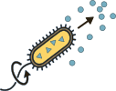
Bacteria
Chemical conditions influence movement
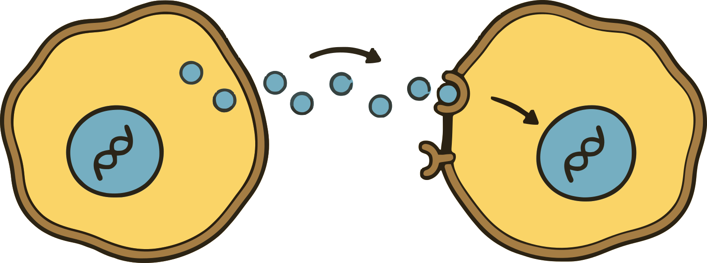
Cells in an organism
Signals from other cells guide cellular
responses
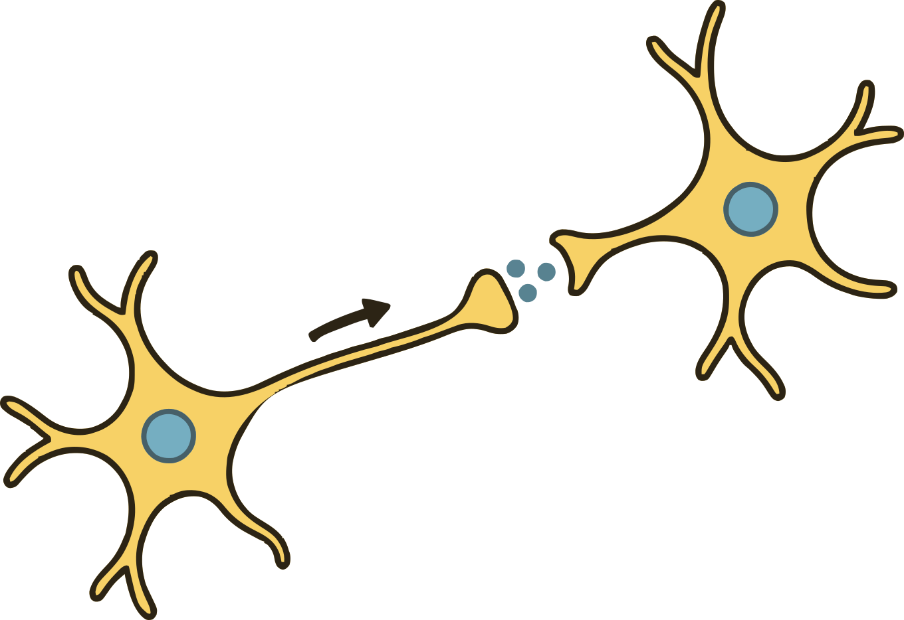
Organisms with brains
Sensory signals inform behavior
Different biological systems face the same physical
question:
Tkačik & Bialek, ARCMP 7, 89 (2016); Tkačik & ten Wolde,
Annu. Rev. Biophys. 54, 249 (2025)
0:30–2 min (1:30). Start from biological function, not a channel
equation. A bacterium biases its movement using chemical signals; cells
in a multicellular organism regulate their activity in response to other
cells; animals use neural circuits to transform sensory evidence into
behavior. These are representative tasks, not an evolutionary ladder or
a ranking by complexity. Sensing and processing do not require conscious
thought. The common idea is a physical internal state whose statistics
depend on external conditions. The drawings are original schematic
illustrations, not measured structures or data. No claim is made that
all biological systems maximize mutual information, nor that organism
size determines response speed.
Context: Tkačik and Bialek, “Information Processing in Living
Systems” (2016), surveys information-theoretic descriptions across
biological scales. Tkačik and ten Wolde, “Information Processing in
Biochemical Networks” (2025), provides biochemical sensing and
regulatory-network context. These reviews motivate the question; later
slides identify the particular solvable models and their assumptions.
Sources: TkacikBialek2016; TkacikTenWolde2025.
What does it mean to process
information?
An environmental change becomes detectable when it leaves a
distinguishable trace inside the system
Environmental
fluctuations
Information
processing
How can a system respond reliably to one or more inputs,
Tkačik & Bialek, ARCMP 7, 89 (2016); Tkačik & ten Wolde,
Annu. Rev. Biophys. 54, 249 (2025)
2–3:15 min (1:15). Define information operationally before
introducing entropy: observing an internal response can change what we
infer about the input. Distinguish sensing, the physical acquisition of
evidence, from processing, its transformation by internal dynamics.
Molecular interactions and cellular states fluctuate, so the appropriate
model will assign probabilities to responses. The chain is an organizing
schematic, not a claim that every biological system is strictly
feedforward. Recurrent interactions, internal noise and external
feedback can matter. “Information” here does not itself quantify
fitness, utility or cognition. Avoid introducing mutual-information
notation yet.
Context: Tkačik and Bialek, “Information Processing in Living
Systems” (2016), motivates operational information measures. Tkačik and
ten Wolde, “Information Processing in Biochemical Networks” (2025),
reviews sensing and transformations by noisy biochemical networks.
Sources: TkacikBialek2016; TkacikTenWolde2025. Transition: all four
stages unfold in time, while the external condition may itself be
changing.
Sensing and responding takes time, but the
environment evolves in the meantime
Collecting evidence takes time, while the environment and the system
keep changing
Short memory
Long memory
Relative timescales matter
Relative timescales matter: how long does the signal
persist, and how quickly does the system respond
ten Wolde et al. , J. Stat. Phys. 162, 1395 (2016); Mora
& Nemenman, PRL 123, 198101 (2019)
3:15–4:30 min (1:15). Read all traces on the same time axis. The gray
reference in the lower rows is the same signal. The short-memory
response follows the two changes but fluctuates; the longer-memory
response is smoother, responds late and strongly attenuates the brief
pulse. Both filters receive the same finite-rate measurement noise. This
is a reproducible discrete-time illustration, not a measurement from a
particular organism. Source and numerical parameters:
scripts/intro_traces.py and assets/generated/intro-timescales.json. The
exponential readouts have response times 0.055 and 0.85 in arbitrary
units, with a sampling interval of 0.01. The pulse widths are 3 and 0.8.
Do not assign these numbers to bacteria or brains, or conclude that a
smoother trace always has more information. Exact path information and
current-state accuracy will later be distinguished.
Context: ten Wolde, Becker, Ouldridge and Mugler, “Fundamental Limits
to Cellular Sensing” (2016), relates receptor correlations, independent
evidence and integration. Mora and Nemenman, “Physical Limit to
Concentration Sensing in a Changing Environment” (2019), motivates
sensing while the target changes. The displayed filters are our teaching
construction, not the microscopic model of either paper. Sources:
TenWolde2016; MoraNemenman2019. Transition: start with a single
receptor, calculate what its finite record tells us, then restore
changing inputs and larger networks.
How
precisely can one receptor measure concentration?
ENVIRONMENT (\(\tau_H\) )
\(H(t)\)
External signal(s)
RECEPTOR (\(\tau_R\) )
\(R(t)\in\{0,1\}\)
Bound or unbound
READOUT (\(\tau_U\) )
\(U(t)\)
Readout or response
Observe for a time \(T\) to estimate the environment. We
want: \(\tau_R\ll
T\) : average effectively over receptor memory\(T\ll\tau_H\) : the environment changes
little during the estimate
ten Wolde et al. , J. Stat. Phys. 162, 1395 (2016); Tkačik
& Bialek, Annu. Rev. Condens. Matter Phys. 7, 89 (2016)
Narrative: begin with the concentration-estimation problem before
naming the three clocks. T is a chosen observation duration, not an
intrinsic relaxation time. The two inequalities have different jobs:
T≫τ_corr makes occupancy averaging useful, whereas T≪τ_s justifies a
frozen concentration in a changing environment. The exact fixed-c
finite-window calculation does not assume T≫τ_corr. If c is externally
clamped forever, there is no environmental upper bound on T. We
temporarily set aside the downstream response x(t); the first estimator
will use the fraction of time the receptor is bound.
4:30–6 min (1:30). After the qualitative motivation, introduce the
concrete environment→receptor→readout chain and its notation. Replace it
with the accepted illustrative simulated traces; these are not
experimental measurements. Name environmental persistence τ_s, receptor
memory τ_corr and response time τ_r. The first controlled limit uses
τ_corr≪T≪τ_s: the environment is effectively constant during
observation. This is a timescale approximation. Preview the route
briefly: receptor estimation, information in snapshots and records,
interacting timescales, then the neural example. The PRX/JStat work
provides the connected multiscale generalization; the PRL circuit
supplies the biophysical application. Begin the receptor model at minute
6.
Context: ten Wolde et al., “Fundamental Limits to Cellular Sensing”
(2016); Tkačik and Bialek, “Information Processing in Living Systems”
(2016); Tkačik and ten Wolde, “Information Processing in Biochemical
Networks” (2025). Sources: TenWolde2016; TkacikBialek2016;
TkacikTenWolde2025.
Diffusion
sets the rate of receptor encounters
A RECEPTOR IN A REFLECTING MEMBRANE
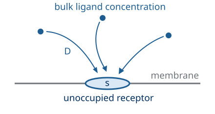
\(s\) : disk radius\(D\) : ligand diffusivity\(c\) : faraway concentration\(H(t)=\{c = \mathrm{const}\}\) \(\tau_H=\tau_c\)
FROM DIFFUSION TO BINDING
\[J_{\rm empty}=4Dsc,\qquad k_+=4Ds\]
\(J_{\rm empty}\) counts captures per
unit time while the receptor is not occupied
\[\overline N_{\rm
bind}=T(1-p)\,4Dsc\]
\(p\) is the bound fraction, so \(1-p\) is the fraction of time available for
capture
\(H(t)=\{c(t)\}\) ; here \(c(t)=c\) for \(T\ll\tau_c=\tau_H\) \(c\) : bulk concentration far from the
receptor
Derivation: the diffusion flux into a receptor disk
Fixed \(H(t)=c(t)=c\) during the record
(\(T\ll\tau_c\) ); ideal
diffusion-controlled disk; perfectly absorbing empty patch and
reflecting surrounding plane
Berg & Purcell, Biophys. J. 20, 193 (1977)
Berg and Purcell, Physics of chemoreception (1977), uses an
electrostatic analogy to obtain the disk capture coefficient. The
attached calculation verifies the same ideal boundary-value problem in
disk coordinates. It is an explanatory expansion, not a claim that the
paper uses these coordinates. The second argument in c_loc(rho,z) is
height, never time. The solution is stationary. Far away means distances
large relative to the depleted region around the patch, where the
reservoir holds c fixed. A spherical absorber is a different problem and
is not substituted for this receptor. The paper’s effective capture
radius can absorb imperfect sticking. The two-state kinetics to follow
are an effective approximation, not an explicit spatial rebinding
model.
The ligand diffuses and can get randomly captured by the receptor,
which then switches from being inactive to active
\[
0 \xrightleftharpoons[k_-]{k_+c} 1
\]
Observable \(R(t)\in\{0,1\}\) over a window of
duration \(T\)
Parameter \(c\) , fixed
within the window
Strategy \(p(c)\)
\[
0 \xrightleftharpoons[k_-]{k_+c} 1
\]
A RECEPTOR IN A REFLECTING MEMBRANE
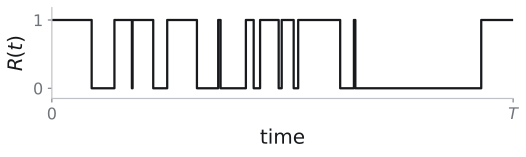
Integrating
the disk flux to get the binding rate
\(c_{\rm loc}(\rho,z)\) : stationary
concentration; \(\rho\) : radial
distance in the membrane; \(z\) : height
above it
Stationary diffusion and boundary conditions
\[\nabla^2c_{\rm loc}=0,\qquad c_{\rm
loc}\to c\quad\text{far from the patch}\]
\[c_{\rm loc}(\rho,0)=0\
(\rho<s),\qquad\partial_zc_{\rm loc}(\rho,0)=0\
(\rho>s)\]
\(z=0\) : membrane surface. The disk of
the receptor is an absorbing boundary, and the surrounding membrane a
reflecting one
Solve in coordinates adapted to the disk
\[\rho=s\sqrt{(1+\xi^2)(1-\eta^2)},\qquad
z=s\xi\eta\]
\[\frac{d}{d\xi}\!\left[(1+\xi^2)\frac{dc_{\rm
loc}}{d\xi}\right]=0\quad\Longrightarrow\quad c_{\rm
loc}=\frac{2c}{\pi}\arctan\xi\]
Disk: \(\xi=0\) . Far field: \(\xi\to\infty\) . Reflecting plane: \(\eta=0\) , with zero normal derivative
Surface gradient → inward flux density
\[\left.\frac{\partial
z}{\partial\xi}\right|_{\rho,\xi=0}=s\eta=\sqrt{s^2-\rho^2}\]
\[j(\rho)=D\,\partial_zc_{\rm
loc}(\rho,0)=\frac{2Dc}{\pi\sqrt{s^2-\rho^2}}\]
\(j\) : captured molecules per area and
time
Integrate over rings of area \(2\pi\rho\,d\rho\)
\[J_{\rm empty}=\int_0^s
j(\rho)\,2\pi\rho\,d\rho=4Dc\int_0^s\frac{\rho\,d\rho}{\sqrt{s^2-\rho^2}}\]
\[=4Dc\left[-\sqrt{s^2-\rho^2}\right]_0^s=4Dsc\]
\(k_+=J_{\rm empty}/c=4Ds\) has units
volume/time
Stationary diffusion above a reflecting plane; absorbing disk of radius
\(s\) ; fixed bulk concentration
Berg & Purcell, Biophys. J. 20, 193 (1977)
The coordinate verification expands the original electrostatic route.
See study notes 6 for the full derivation and distinction between the
ideal disk and a spherical absorber.
Estimate
concentration from the fraction of time bound
Derivation: receptor memory
Observe the binary trajectory \(R(t)\)
for a duration \(T\)
Berg & Purcell, Biophys. J. 20, 193 (1977); ten Wolde et
al. , J. Stat. Phys. 162, 1395 (2016)
Narrative: we choose occupancy averaging as our sensing strategy. The
cell obtains one record, not the true concentration. Ask for typical
error over repetitions at the same c. The receptor memory derivation
supplies p(c) and C_n(u); both are needed to quantify this strategy. Do
not promise exact recovery from a finite trace.
6–8:30 min (2:30). Define binary occupancy before interpreting the
trace. The displayed record is a reproducible simulation of a stationary
ideal two-state receptor with fixed rates. Diffusion supplies k_+=4Ds
for the ideal patch; spatially resolved rebinding, unknown kinetic
parameters and molecular readout constraints are not included. The
latent parameter is constant during the observation window. Source:
BergPurcell1977; EndresWingreen2009; TenWolde2016.
A RECEPTOR IN A REFLECTING MEMBRANE
\(s\) : disk radius\(D\) : ligand diffusivity\(c\) : faraway concentration\(H=c\) , \(\tau_H=\tau_c\)
Observable \(R(t)\in\{0,1\}\) over a window of
duration \(T\)
Parameter \(c\) , fixed
within the window
Strategy \(p(c)\)
\[
0 \xrightleftharpoons[k_-]{k_+c} 1
\]
\[
p=\langle R\rangle=\frac{k_+c}{k_+c+k_-}
\]
so larger \(c\) raises the fraction
of time bound
\[
C_R(u)=p(1-p)e^{-|u|/\tau_{\mathrm{corr}}}
\]
\[
\tau_R=\tau_{\mathrm{corr}}=\frac{1}{k_+c+k_-}
\]
\(C_R(u)\) measures how correlations
at lag \(u\) decay
\(s\) : disk radius\(D\) : ligand diffusivity\(c\) : faraway concentration\(H(t)=\{c = \mathrm{const}\}\) \(\tau_H=\tau_c\)
Flux
balance gives the concentration–occupancy relation
Binding rate \(\alpha=k_+c\) ; unbinding
rate \(\beta=k_-\) ; idea: estimate
\(c\) from the measured bound fraction
\(p\) (the stationary probability)
\[
\frac{dP_1}{dt}=\alpha(1-P_1)-\beta P_1
\]
At stationarity, probability flux into and out of the bound state
balance:
\[
0=\alpha(1-p)-\beta p
\]
\[
p=\frac{\alpha}{\alpha+\beta}
=\frac{k_+c}{k_+c+k_-} \implies c = \frac{p}{1-p}\frac{k_-}{k_+}
\]
Idea: estimate \(c\) from the measured
bound fraction
LIMITING CHECKS
\[
c\to0:\quad p\to0
\]
\[
c\to\infty:\quad p\to1
\]
Berg & Purcell, Biophys. J. 20, 193 (1977)
Narrative: this is the calibration step, not yet a precision
calculation. The master equation gives E[n(t)] at stationarity. A noisy
finite record will not equal this mean exactly. End by asking whether
successive observations add independent evidence; the next slide
calculates the answer.
8:30–11:30 min (3 min). Start with probability fluxes rather than
quoting a Hill curve. Identify the stationary condition, solve the
linear balance and check both concentration extremes. k_+c and k_- have
inverse-time units. The mean occupancy is p, not a density over
concentration. Source: BergPurcell1977.
Conditional
relaxation determines receptor memory
RELAXATION AFTER A BOUND STATE
\[
q(u)=P[R(u)=1\mid R(0)=1],\qquad q(0)=1
\]
The same probability balance holds after conditioning:
\[\dot q=\alpha(1-q)-\beta q\]
Subtract \(0=\alpha(1-p)-\beta p\) :
\[
\frac{d}{du}(q-p)=-(\alpha+\beta)(q-p)
\]
\[
q(u)=p+(1-p)e^{-u/\tau_{\mathrm{corr}}},
\qquad \tau_{\mathrm{corr}}=(\alpha+\beta)^{-1}
\]
TWO-TIME COVARIANCE
\[
\begin{aligned}
\langle R(0)R(u)\rangle
&=P[R(0)=1]P[R(u)=1\mid R(0)=1]\\
&=p\,q(u)
\end{aligned}
\]
\[
C_R(u)=p(1-p)e^{-|u|/\tau_{\mathrm{corr}}}
\]
\(C_R(0)=p(1-p)\) and \(C_R(u)\to0\) as \(u\to\infty\)
Stationarity gives \(C_R(-u)=C_R(u)\)
Berg & Purcell, Biophys. J. 20, 193 (1977)
Narrative: explain why this covariance is worth calculating before
the conditioning algebra. C_n(u) measures how strongly two observations
u apart remain correlated. This correlation is what will prevent every
instant in an occupancy average from counting as a fresh sample. Close:
we now have the mean calibration and the covariance; combine them to
assess the finite-record estimator.
11:30–15 min (3:30). Protected covariance calculation. q(u) obeys the
same master equation after imposing q(0)=1. Subtract the stationary
balance to obtain centered exponential relaxation. Because n is binary,
its product is one only when both observations are bound: E[n(0)n(u)]=p
q(u). Subtract p² and extend to negative lag using stationarity of a
scalar autocovariance. Check both zero-lag Bernoulli variance and
large-lag decay. Source: BergPurcell1977; TenWolde2016.
Both
transition rates determine the correlation time
ONE BOUND INTERVAL
\[P(T_b>u)=e^{-k_-u}\] \[\tau_{\mathrm{bound}}=\frac1{k_-}\]
which is the mean duration of a bound episode
Correlation decays through both transition rates
\[\tau_{\mathrm{corr}}=\frac1{k_+c+k_-}\]
\[1-p=\frac{k_-}{k_+c+k_-}\] \[\tau_{\mathrm{corr}}=(1-p)\tau_{\mathrm{bound}}\]
Receptor correlation can be expressed in terms of both
\[
\begin{aligned}
\langle R(0)R(u)\rangle
&=p^2+p(1-p)e^{-|u|/\tau_{\mathrm{corr}}}\\[0.5em]
&=p^2+p(1-p)e^{-|u|/[(1-p)\tau_{\mathrm{bound}}]}
\end{aligned}
\]
The second line is the paper’s Eq.49. The centered covariance subtracts
\(p^2\)
Constant transition rates; stationary two-state receptor. \(t_b\) : bound dwell time; \(\tau_{\rm corr}\) : correlation time
Berg & Purcell, Biophys. J. 20, 193 (1977)
This is a notation translation, not a new physical model. The
original single-receptor calculation already derives the occupancy
correlation. Our conditional probability q(u) is an equivalent, more
explicit route to their G(u).
Timing intentionally provisional: the user has deferred the time
budget. The positive duration is a main-slide marker, not a rehearsal
estimate.
Long
records average over receptor memory
Derivation: occupancy variance
The cell can only measure the fraction of time bound (measured in \(x=T/\tau_{\mathrm{corr}}\) ) so its estimate
is uncertain\[\bar R_T=T^{-1}\int_0^T
R(t)\,dt \implies \operatorname{Var}(\bar
R_T)=2p(1-p)\frac{x-1+e^{-x}}{x^2}\]
Exact variance at fixed concentration; \(x=T/\tau_{\mathrm{corr}}\)
\[\operatorname{Var}(\bar
R_T)=2p(1-p)\frac{x-1+e^{-x}}{x^2}\]
SHORT RECORD
\[T\ll\tau_{\mathrm{corr}}:\quad
\operatorname{Var}(\bar R_T)\to p(1-p)\]
Little changes during the record: effectively one observation
LONG RECORD
\[T\gg\tau_{\mathrm{corr}}:\quad
\operatorname{Var}(\bar
R_T)\simeq\frac{2p(1-p)\tau_{\mathrm{corr}}}{T}\]
\(N_{\mathrm{eff}}\simeq
T/(2\tau_{\mathrm{corr}})\) independent samples give the same
variance
\(x=T/\tau_{\mathrm{corr}},\quad
\mathrm{Var}(\bar R_T)=2p(1-p)(x-1+e^{-x})/x^2\)
Fixed concentration; stationary receptor. Histogram: 1,800 records.
Effective samples match the exact variance
Berg & Purcell, Biophys. J. 20, 193 (1977)
Main path: distinguish the time average of one record from its
variation over repeated records at the same c. Stationarity makes the
occupancy estimate unbiased, so its variance equals its mean-squared
occupancy error. Read the exact expression and both limits, then advance
once to explore the histogram. The Derivation badge remains available
over the interactive view. Optional calculations: expectation and
variance, lag-pair counting, then the finite-window integral. Return
preserves the plot parameters and reveal.
Occupancy variance
measures finite-record error
\(E[\cdot]\) is the average with
respect to repeated records at the same concentration, while \(\bar R_T\) is the time-average from one
trajectory
\[\bar R_T=\frac1T\int_0^T R(t)\,dt\]
The fraction of the observation window spent bound
Stationarity gives an unbiased occupancy estimate
\[E[\bar R_T]=\frac1T\int_0^T
E[R(t)]\,dt=p\]
\(E\) averages repeated records at
fixed \(c\) ; \(E[R(t)]=p\)
Mean-squared error equals variance
\[E[(\bar R_T-p)^2]=\operatorname{Var}(\bar
R_T) =\frac1{T^2}\int_0^T\!dt\int_0^T\!dt'\,\langle\delta R(t)\delta
R(t')\rangle =
\frac1{T^2}\int_0^T\!dt\int_0^T\!dt'\,C_R(t-t')\]
The bias term vanishes because \(E[\bar
R_T]=p\)
Expand the squared time average, with \(\delta
R=R-p\)
\[\operatorname{Var}(\bar
R_T)=\frac1{T^2}\int_0^T\!dt\int_0^T\!dt'\,\langle\delta R(t)\delta
R(t')\rangle\]
Every pair of observation times contributes its covariance
Use stationarity to express covariance by time lag
\[\operatorname{Var}(\bar
R_T)=\frac1{T^2}\int_0^T\!dt\int_0^T\!dt'\,C_R(t-t')\]
Berg & Purcell, Biophys. J. 20, 193 (1977)
Narrative: the time integral belongs to one measured record;
expectation belongs to our statistical assessment of repeated records at
fixed c. The cell does not need an ensemble average to form nbar_T.
First check bias, then quantify error. Since E[nbar_T]=p, MSE for
estimating occupancy p equals Var(nbar_T); this exact identity does not
say the inverse concentration estimator is unbiased. Keep the four
stages distinct. We still owe the audience concentration error, which
requires the calibration slope on slide 17. Use 3 minutes by replacing
unexplained algebra with these explicit questions.
15–18 min (3 min). Write δn=n−p and expand the square of its time
average. Interchanging expectation and the bounded integrals is
justified for a binary process. Stationarity yields E[nbar]=p and
covariance C(t−t′). Do not replace the record by independent samples
before evaluating its correlations. Source: BergPurcell1977.
\[
\bar R_T=\frac1T\int_0^T R(t)\,dt, \qquad E[\bar R_T]=\frac1T\int_0^T
E[R(t)]\,dt=p
\]
\(T-u\) : pair weight. Factor 2: the
two time orderings. Stationarity makes \(C_R\) even
\[
\operatorname{Var}(\bar R_T)
=\frac{2}{T^2}\int_0^T(T-u)C_R(u)\,du
\]
Receptor memory sets
the effective sample count
Substitute the receptor covariance
\[
\operatorname{Var}(\bar R_T)
=\frac{2p(1-p)}{T^2}\int_0^T(T-u)e^{-u/\tau_{\mathrm{corr}}}\,du
\]
Integration by parts
\[
\begin{aligned}
\int_0^T(T-u)e^{-u/\tau_{\mathrm{corr}}}\,du
&=\left[-\tau_{\mathrm{corr}}(T-u)e^{-u/\tau_{\mathrm{corr}}}\right]_0^T-\tau_{\mathrm{corr}}\int_0^T
e^{-u/\tau_{\mathrm{corr}}}\,du\\
&=T\tau_{\mathrm{corr}}-\tau_{\mathrm{corr}}^2(1-e^{-T/\tau_{\mathrm{corr}}})
\end{aligned}
\]
Exact finite-window variance
\[
\operatorname{Var}(\bar R_T)
=\frac{2p(1-p)}{T^2}
\left[T\tau_{\mathrm{corr}}-\tau_{\mathrm{corr}}^2(1-e^{-T/\tau_{\mathrm{corr}}})\right]
\]
SHORT WINDOW
\[
T\ll\tau_{\mathrm{corr}}:
\quad \operatorname{Var}(\bar R_T)\to p(1-p)
\]
The receptor usually stays in its initial state
LONG WINDOW
\[
T\gg\tau_{\mathrm{corr}}:
\quad \operatorname{Var}(\bar R_T)\simeq
\frac{2p(1-p)\tau_{\mathrm{corr}}}{T}
\]
Match \(p(1-p)/N\) : \(N_{\rm eff}=T/(2\tau_{\rm corr})\)
Berg & Purcell, Biophys. J. 20, 193 (1977)
Optional calculation: the interactive comparison now lives on the
parent result slide. This step retains the integral and its limiting
checks.
Narrative: interpret the exact expression as the estimator error, not
a property of a lone trace. T≪τ_corr is a diagnostic check even though
useful averaging is the opposite limit. T≫τ_corr gives the 1/T precision
improvement and a variance-equivalent sample count. If the environment
is changing, this long window must still fit inside τ_s. Close by
returning to the original target: c, rather than the measured
occupancy.
21–25 min (4 min). Perform integration by parts on the replacement
stage. The boundary term gives Tτ_corr, the remaining exponential
integral gives −τ_corr²(1−exp(−T/τ_corr)). The short-window check uses
exp(−x)=1−x+x²/2+…, so the apparent 0/0 limit is finite. The long-window
variance matches independent Bernoulli averaging with N_eff=T/(2τ_corr).
N_eff is a variance-equivalent count, not the sampling frame rate.
Rehearsal cut3: omit the short-window reveal while retaining the
long-window limit. Source: BergPurcell1977; full algebra A3.
Interactive interpretation, within the existing 4 minutes: open
Explore averaging after the exact variance. Compare a nearly frozen
record with many correlation times; use the ensemble histogram to
distinguish one realization from estimator variance. Return before
proceeding.
\[
\begin{aligned}
\int_0^T(T-u)e^{-u/\tau_{\mathrm{corr}}}\,du
&=\left[-\tau_{\mathrm{corr}}(T-u)e^{-u/\tau_{\mathrm{corr}}}\right]_0^T-\tau_{\mathrm{corr}}\int_0^T
e^{-u/\tau_{\mathrm{corr}}}\,du\\
&=T\tau_{\mathrm{corr}}-\tau_{\mathrm{corr}}^2(1-e^{-T/\tau_{\mathrm{corr}}})
\end{aligned}
\]
Exact finite-window variance
\[
\operatorname{Var}(\bar R_T)
=\frac{2p(1-p)}{T^2}
\left[T\tau_{\mathrm{corr}}-\tau_{\mathrm{corr}}^2(1-e^{-T/\tau_{\mathrm{corr}}})\right]
\]
The Berg–Purcell limit:
diffusion and receptor size set sensing precision
Infer \(c\) by inverting the occupancy
calibration: \(\hat c=(k_-/k_+)\bar
R_T/(1-\bar R_T)\)
PRECISION OF OCCUPANCY AVERAGING
\[\frac{\operatorname{Var}(\hat
c)}{c^2}\simeq\frac{2\tau_{\rm corr}}{Tp(1-p)}=\frac2{\overline N_{\rm
bind}}\]
this is the long-\(T\) concentration
error, which bounds the single-receptor precision
COUNT THE BINDING EVENTS
\[\overline N_{\rm bind}=Tk_+c(1-p)\]
the number of binding events scales linearly with the observation time,
so the relative RMS error falls as \(T^{-1/2}\)
The estimator matters: full-trajectory likelihood reaches \(1/\overline N_{\rm bind}\) asymptotically
HOW QUICKLY EVENTS ARRIVE
\[k_+=4Ds\]
\[\overline N_{\rm bind}=4Dsc(1-p)T\]
\(D\) : diffusivity; \(s\) : the same disk radius\(c\) : faraway concentration
HOW PRECISELY OCCUPANCY SENSES
\[\frac{\operatorname{Var}(\hat
c)}{c^2}\simeq\frac{2}{\overline N_{\rm bind}} =
\frac1{2Dsc(1-p)T}\]
\[=\frac1{2Dsc(1-p)T}\]
diffusion and receptor geometry determine sensing of the fixed bulk
concentration
What changes when concentration varies during the observation?
Derivations: concentration uncertainty and diffusion-limited precision
Occupancy-averaging estimator; many events; local error propagation;
\(p\) away from 0 and 1
Ideal disk receptor; long-record occupancy averaging and local error
propagation. Geometry and estimator determine the prefactor
Berg & Purcell, Biophys. J. 20, 193 (1977); Endres &
Wingreen, PRL 103, 158101 (2009)
Berg–Purcell Eqs.50–52 convert occupancy fluctuations to
concentration precision. The factor two belongs to occupancy averaging.
Endres and Wingreen, Maximum Likelihood and the Single Receptor (2009),
derives the ideal likelihood improvement. The inverse response can
diverge when an entire finite record is bound; this is an asymptotic
local variance statement. The lower panels substitute diffusion into the
same result.
The calibration
slope converts occupancy error to concentration error
Differentiate the calibration \(p(c)\)
\[p(c)=\frac{k_+c}{k_+c+k_-},\qquad
c\frac{dp}{dc}=p(1-p) \quad \implies \quad \hat
c=\frac{k_-}{k_+}\frac{\bar R_T}{1-\bar R_T}\]
\[\hat c=\frac{k_-}{k_+}\frac{\bar
R_T}{1-\bar R_T}\]
For small errors, \(\delta p\simeq
(dp/dc)\,\delta c\)
Linearize the inverse calibration
\[\frac{\hat c-c}{c}\simeq\frac{\bar
R_T-p}{p(1-p)} \quad \implies \quad \frac{\operatorname{Var}(\hat
c)}{c^2}\simeq\frac{\operatorname{Var}(\bar
R_T)}{p^2(1-p)^2}\]
\[\frac{\operatorname{Var}(\hat
c)}{c^2}\simeq\frac{\operatorname{Var}(\bar
R_T)}{p^2(1-p)^2}\]
Divide occupancy variance by the squared calibration slope
Insert the long-window occupancy variance
\[\operatorname{Var}(\bar
R_T)\simeq\frac{2p(1-p)\tau_{\rm corr}}{T} \quad \implies \quad
\frac{\operatorname{Var}(\hat c)}{c^2}\simeq\frac{2\tau_{\rm
corr}}{Tp(1-p)}\]
\[\frac{\operatorname{Var}(\hat
c)}{c^2}\simeq\frac{2\tau_{\rm corr}}{Tp(1-p)}\]
Express that precision in observable event counts
\[\overline N_{\rm
bind}=Tk_+c(1-p)=Tk_-p=\frac{T}{\tau_{\rm corr}}p(1-p) \quad \implies
\quad \frac{\operatorname{Var}(\hat c)}{c^2}\simeq\frac2{\overline
N_{\rm bind}}\]
\[\frac{\operatorname{Var}(\hat
c)}{c^2}\simeq\frac2{\overline N_{\rm bind}}\]
Stationary binding and unbinding fluxes are equal. Full-trajectory
likelihood gives half this asymptotic variance
Long-record asymptotic precision; many transitions; small errors under
local inversion
Berg & Purcell, Biophys. J. 20, 193 (1977); Endres &
Wingreen (2009)
Study notes 10 and 10.D1 give the estimator definition, calibration
derivative and event-count identity. Berg–Purcell Eqs.50–53 use mean
bound residence; tau_corr=(1-p)tau_bound makes the notation
equivalent.
Insert the capture
rate to obtain the sensing limit
FROM THE RECEPTOR RECORD
\[\frac{\operatorname{Var}(\hat
c)}{c^2}\simeq\frac{2\tau_{\mathrm{corr}}}{T p(1-p)}\]
\(p\) is the mean occupancy, \(T\) is the observation time, and we use the
fact that \(\tau_{\mathrm{corr}}=1/(k_+c+k_-)\)
Eliminate the correlation time to explicit encounters
\[\frac{p}{\tau_{\mathrm{corr}}}=k_+c\]
\[\frac{\operatorname{Var}(\hat
c)}{c^2}\simeq\frac{2}{k_+c(1-p)T}\]
so the error falls as the number of binding events grows
Insert the Berg–Purcell patch arrival rate
\[k_+=4Ds\] \[\frac{\operatorname{Var}(\hat
c)}{c^2}\simeq\frac{1}{2Dsc(1-p)T}\]
so faster diffusion, a larger receptor and longer observation supply
more encounters, while occupancy reduces available capture time
The estimator in terms of physical parameters
\[\frac{\delta
c}{c}\sim(DscT)^{-1/2}\]
The geometry and sensing strategy fix the prefactor. Occupancy averaging
gives \(2/\overline
N_{\mathrm{bind}}\) ; a resolved-path likelihood reaches \(1/\overline N_{\mathrm{bind}}\)
asymptotically
Occupancy averaging; long record; many events; local error propagation;
ideal disk receptor
Berg & Purcell, Biophys. J. 20, 193 (1977); Endres &
Wingreen, PRL 103, 158101 (2009)
This substitutes the disk capture rate into the preceding
concentration variance; it is not a new bound or a geometry change.
Complete the original single-receptor calculation. The equality follows
the stated ideal capture rate and the long-window occupancy variance.
Distinguish geometry (disk versus sphere), receptor occupancy, and
estimator efficiency. The exact finite-window integration earlier
extends the paper’s long-time evaluation. Further local-return
corrections are in the Kaizu appendix, not silently imported into this
formula.
Timing intentionally provisional: the user has deferred the time
budget. The positive duration is a main-slide marker, not a rehearsal
estimate.
From fixed concentration to changing signals
From fixed concentration \(c\) to a
changing signal \(H(t)\)
Signal persistence \(\tau_H\)
Response memory\(\tau_U\)
Let’s consider a perfect receptor and focus on how well a
noisy response can track a noisy
environment
Longer \(\tau_U\) averages noise,
but retains earlier values of \(H(t)\)
Mora & Nemenman, PRL 123, 198101 (2019); Malaguti & ten
Wolde, eLife 10, e62574 (2021)
Start from the preceding question: concentration could be treated as
fixed during a receptor record; now allow the environment to change
while the cell responds. The three records recall the H, R, U roles.
They are the same illustrative biological-chain realization used in the
introduction, split into separately editable vector plots.
On the first reveal remove the explicit receptor record and move the
response upward. Assume a perfect receptor that passes H(t) directly to
the response. Noise eta(t) acts in the response itself. The next
subslide defines this linear model and its response memory.
Next highlight tau_H: how long the environmental signal persists.
Then highlight tau_U: how long the response keeps past evidence. The
earlier T was a rectangular observation window; tau_U is an exponential
memory time. Compare these two times to explain why longer memory
averages noise but also retains old signal values. The next subslide
writes the model and measures its current-state error E[(U-H)^2].
Mora and Nemenman, Physical Limit to Concentration Sensing in a
Changing Environment (2019), motivates the sampling-tracking
competition. This is an original simplified example, not their
microscopic concentration model or Bayesian estimator. White measurement
noise suppresses a finite observation-correlation time and cannot be
extrapolated to arbitrarily fast biological readout.
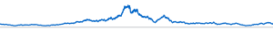
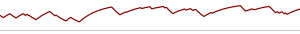
How accurately does an
exponential readout track its input?
Signal persistence\(\tau_H\)
Response memory\(\tau_U\)
\[
\frac{dH}{dt}=-\frac{H}{\tau_H}+\sqrt{\frac{2\sigma_H^2}{\tau_H}}\,\xi(t)
\]
\[
\frac{dU}{dt}=\frac{H-U}{\tau_U}+\frac{\sqrt{2D_\eta}}{\tau_U}\,\eta(t)
\]
Stationary variance \(\sigma_H^2\) ,
\(\langle \xi(t)\xi(t')\rangle =
\delta(t-t')\)
Noisy exponential averaging, \(\langle\eta(t)\eta(t')\rangle =
\delta(t-t')\)
Unit white noise: \(\langle\eta(t)\eta(t^\prime)\rangle=\delta(t-t^\prime)\)
Choose \(\tau_U\) to minimize the
tracking error \(\mathbb{E}[(U-H)^2]\)
Independent unit white noises \(\xi(t)\) and \(\eta(t)\) ; fixed \(\tau_H\) , \(\sigma_H^2\) , \(D_\eta\)
Mora & Nemenman, PRL 123, 198101 (2019)
The two traces recall the preceding schematic; they are illustrative
biological records, not realizations generated by the OU equations
introduced here. On arrival from the preceding subslide, morph the
signal to the left and the response to the right. The next reveal
connects each trace to its model equation. Blue identifies H throughout;
burgundy identifies U.
The environmental signal is a stationary zero-mean Ornstein-Uhlenbeck
process with persistence tau_H and variance sigma_H^2. Its noise
amplitude sqrt(2 sigma_H^2/tau_H) keeps that stationary variance fixed.
The response U relaxes toward H on time tau_U. Following the preceding
slide’s perfect-receptor simplification, eta represents additive noise
in this effective response, with no separate receptor kinetics. The
response equation is tau_U dU/dt = H-U+sqrt(2D_eta) eta(t). Both xi(t)
and eta(t) have zero mean and unit delta correlation, and the two noises
are independent. D_eta has units signal squared times time.
We use U directly as the estimate of the present H. Fix tau_H,
sigma_H^2 and D_eta, and vary tau_U to minimize E[(U-H)^2]. Gain is
fixed at one. Longer response memory suppresses white noise but retains
older signal values. The next subslide evaluates the variance and
covariance needed for this same error.
Mora and Nemenman, Physical Limit to Concentration Sensing in a
Changing Environment (2019), motivates the sampling-tracking
competition. This is an independent simplified teaching model: their
microscopic concentration process, arrival observations and adaptive
Bayesian filter are replaced by an OU signal and a fixed-gain noisy
response. The idealized white noise omits a finite correlation time and
should not be extrapolated to arbitrarily fast biological response.
\[
E[(U-H)^2]=\underbrace{\sigma_H^2\frac{\tau_U}{\tau_H+\tau_U}}_{\text{tracking
error}}+\underbrace{\frac{D_\eta}{\tau_U}}_{\text{response noise}}
\]
Averaging suppresses noise but increases tracking
error
\[
E[(U-H)^2]=\underbrace{\sigma_H^2\frac{\tau_U}{\tau_H+\tau_U}}_{\text{tracking
error}}+\underbrace{\frac{D_\eta}{\tau_U}}_{\text{response noise}}
\]
Exact for the stationary linear model
When does their sum have a finite minimum?
\[
\tau_U\ll\tau_H:\quad
E[(U-H)^2]\simeq\sigma_H^2\frac{\tau_U}{\tau_H}+\frac{D_\eta}{\tau_U}
\]
\(\tau_U\to0\) : white response noise
diverges
\[
\begin{gathered}U\longrightarrow\langle
H\rangle=0\\[3pt]E[(U-H)^2]\longrightarrow\sigma_H^2\end{gathered}
\]
\(\tau_U\gg\tau_H\) : average over
many signal fluctuations
Vary \(\tau_U\) at fixed \(\sigma_H^2\) , \(\tau_H\) , \(D_\eta\) and unit gain
\[
\implies \qquad \epsilon=\sqrt{\frac{D_\eta}{\sigma_H^2\tau_H}}
\]
\[
\tau_U^*=\frac{\epsilon}{1-\epsilon}\tau_H\qquad(0<\epsilon<1)
\]
The optimum balances sampling and tracking
\[
\epsilon\ge1:\qquad\tau_U^*\to\infty
\]
Long memory reduces the noise-induced error
Unit gain; white response noise\(D_\eta=0\) gives the boundary optimum \(\tau_U\to0\)
\(x=\tau_U/\tau_H,\quad
x^*=\epsilon/(1-\epsilon)\ (0<\epsilon<1);\qquad \epsilon\ge1:\
x^*\to\infty\)
Vary memory along a curve; changing noise defines another optimization.
ε² = Dη/(σ_H²τ_H)
Derivation: tracking error and optimal memory
In the long-memory comparison, begin with tau_U much larger than
tau_H: the response averages many signal fluctuations. Because the
signal has mean zero, its stationary response fluctuations then vanish
and U approaches zero. The signal itself still fluctuates, so the error
tends to sigma_H^2. In the following optimization reveal, epsilon at
least one selects this limiting behavior because error decreases with
every increase in memory.
Four views: read the exact error decomposition; compare response
memory with environmental persistence; identify the finite or boundary
optimum; then vary memory and noise in the interactive example. The
explicit receptor has been omitted: eta is additive noise in the
effective response. The full stationary-moment calculation, substitution
and optimization are available through the derivation badge. The
white-noise divergence at zero memory is a model idealization. Fix
sigma_H^2, tau_H, D_eta and unit gain while varying tau_U. For
0<epsilon<1 the stationary point is a minimum; for epsilon>=1
the infimum is approached at infinite memory. With D_eta=0, the boundary
optimum is zero memory.
Signal persistence\(\tau_H\)
Response memory\(\tau_U\)
\[
\frac{dH}{dt}=-\frac{H}{\tau_H}+\sqrt{\frac{2\sigma_H^2}{\tau_H}}\,\xi(t)
\]
\[
\frac{dU}{dt}=\frac{H-U}{\tau_U}+\frac{\sqrt{2D_\eta}}{\tau_U}\,\eta(t)
\]
\(\langle \xi(t)\xi(t')\rangle =
\delta(t-t')\)
Noisy exponential averaging, \(\langle\eta(t)\eta(t')\rangle =
\delta(t-t')\)
\[
\frac{dH}{dt}=-\frac{H}{\tau_H}+\sqrt{\frac{2\sigma_H^2}{\tau_H}}\,\xi(t)
\]
\[
\frac{dU}{dt}=\frac{H-U}{\tau_U}+\frac{\sqrt{2D_\eta}}{\tau_U}\,\eta(t)
\]
Three
stationary moments determine tracking error
\[
E[(U-H)^2]=V_H+V_U-2C
\]
\(V_H=E[H^2]\) : signal
variance\(V_U=E[U^2]\) : readout
variance\(C=E[HU]\) : present-state
covariance
At fixed variances, a higher covariance \(C\) reduces the error because the
environment and response are correlated
Signal variance: relaxation removes variance; noise adds it
\[
0=-\frac{2V_H}{\tau_H}+\frac{2\sigma_H^2}{\tau_H}
\]
At stationarity, \(dE[H^2]/dt=0\)
Covariance: the response follows the signal while both relax
\[
0=-\left(\frac1{\tau_H}+\frac1{\tau_U}\right)C+\frac{\sigma_H^2}{\tau_U}
\]
\[
C=\sigma_H^2\frac{\tau_H}{\tau_H+\tau_U}
\]
Independent noises: \(\langle\xi(t)\eta(t^\prime)\rangle=0\)
Response variance: relaxation, signal and noise contributions
\[
0=-\frac{2V_U}{\tau_U}+\frac{2C}{\tau_U}+\frac{2D_\eta}{\tau_U^2}
\]
\[
V_U=C+\frac{D_\eta}{\tau_U}
\]
\[
C=\sigma_H^2\frac{\tau_H}{\tau_H+\tau_U},\qquad V_H=\sigma_H^2
\]
Response noise adds variance at rate \(2D_\eta/\tau_U^2\)
Stationary zero means; independent noises; positive timescales; exact
linear moment equations
Three views share the squared-error expansion and the definitions of
V_H, V_U and C. First obtain the stationary signal variance. Then expand
d(HU): independent noises give zero cross variation, yielding C. Finally
expand d(U^2), retaining the Itô correction, and obtain V_U. Covariance
reduces squared error at fixed variances. These equations also solve the
two-dimensional Lyapunov equation. Setting D_eta=0 gives
V_U=C<sigma_H^2, consistent with low-pass filtering. V_U includes
signal-induced variability as well as response noise.
Separate
tracking error from observation noise
Insert \(V_H=\sigma_H^2\) and \(V_U=C+D_\eta/\tau_U\)
\[
E[(U-H)^2]=\sigma_H^2-C+\frac{D_\eta}{\tau_U}
\]
Then use \(C=\sigma_H^2\tau_H/(\tau_H+\tau_U)\)
\[
E[(U-H)^2]=\underbrace{\sigma_H^2\frac{\tau_U}{\tau_H+\tau_U}}_{\text{tracking
error}}+\underbrace{\frac{D_\eta}{\tau_U}}_{\text{response noise}}
\]
Long memory: more error from signal changes. Short memory: more
response noise
Insert the three stationary moments into the squared-error expansion,
then substitute the covariance to separate tracking error from response
noise. The tracking term is the error of a noiseless unit-gain
exponential readout relative to the current H. The second term comes
from independent additive white response noise. Their additivity follows
from linearity and independent noises. At zero memory the white-noise
model diverges; a finite noise correlation time would regularize that
idealization. At infinite memory the response variance and covariance
vanish. The interactive comparison is on the main result slide.
Minimize
current-state error over the readout memory
Minimize \(E[(U-H)^2]\) over \(\tau_U\) at fixed \(\sigma_H^2\) , \(\tau_H\) , and \(D_\eta\)
\[
\frac{d}{d\tau_U}E[(U-H)^2]=\frac{\sigma_H^2\tau_H}{(\tau_H+\tau_U)^2}-\frac{D_\eta}{\tau_U^2}=0
\]
\[
\frac{\tau_U}{\tau_H+\tau_U}=\epsilon,\qquad\epsilon=\sqrt{\frac{D_\eta}{\sigma_H^2\tau_H}}
\]
\[
\tau_U^*=\frac{\epsilon}{1-\epsilon}\tau_H,\qquad0<\epsilon<1
\]
\[
\epsilon\ll1:\qquad\tau_U^*\simeq\sqrt{\frac{D_\eta\tau_H}{\sigma_H^2}}
\]
For \(\epsilon\ge1\) , increasing
\(\tau_U\) keeps reducing the
error\(\sigma_H^2\)
\(D_\eta=0\) gives the limiting case
\(\tau_U\to0\)
Vary the response memory while keeping the signal and noise fixed
Two views: differentiate the exact tracking error at fixed sigma_H^2,
tau_H, D_eta and unit gain; then solve and identify the finite or
boundary optimum. For 0<epsilon<1 the derivative changes from
negative to positive. In x=tau_U/tau_H, the error divided by sigma_H^2
is x/(1+x)+epsilon^2/x, with minimum 2epsilon-epsilon^2 at
x=epsilon/(1-epsilon). At epsilon=.25 this is 7/16 at x=1/3. For
epsilon>=1 the infimum is 1 at infinite memory. With D_eta=0 the
optimum is zero memory. This optimum belongs to the explicit Gaussian
example; Mora and Nemenman motivate the changing-environment question.
The interactive comparison is on the main result slide.
How
much does the response tell us about the input?
Environmental signal \(H\)
\[
{\color{#0366c8}p_H(h)}
\]
\[
{\color{#800000}p_U(u)}
\]
Stochastic response \(U\)
\[
{\color{#0366c8}p_H(h)}=\int p_{HU}(h,u)\,du
\]
\[
{\color{#800000}p_U(u)}=\int p_{HU}(h,u)\,dh
\]
The statistical dependence in the joint distribution can be measured
by the mutual information
\[
\begin{gathered}I(H;U)=\int
p_{HU}(h,u)\log\frac{p_{HU}(h,u)}{{\color{#0366c8}p_H(h)}{\color{#800000}p_U(u)}}\,dh\,du\end{gathered}
\]
Measures statistical dependence
\[
p_{HU}=p_Hp_U\quad\Longrightarrow\quad I(H;U)=0
\]
\[
{\color{#800000}p_U(u)}
\]
The spread contains signal variation and response noise
\[
p_{U\mid H}(u\mid h)
\]
Jointly Gaussian signals and responses
\[
I(H;U)={\color{#800000}\mathcal H(U)}-\mathcal H(U\mid H)
\]
Mutual information measures the average reduction in
uncertainty when knowing \(H\)
Two equally likely signals
Overlap makes the two signals harder to distinguish
\[
{\color{#800000}p_U(u)}=\tfrac12p(u\mid h_1)+\tfrac12p(u\mid h_2)
\]
\[
I(H;U)\le\mathcal H(H)=\log2\ \mathrm{nats}=1\ \mathrm{bit}
\]
Two equally likely signals · Gaussian responses
Natural logarithms give nats · divide by \(\log 2\) for bits
Derivation: mutual information and uncertainty
Shannon, Bell Syst. Tech. J. 27, 379 (1948)
Begin with the joint density and the vertical sequence from
environmental signal to stochastic response. A fixed signal can produce
different responses, so the correspondence is not one-to-one. In the
next reveal, introduce the two marginals by integrating the joint
density over the other variable. The first picture is an illustrative
correlated Gaussian density, while the displayed probability identities
and mutual-information definition are general. The initial question is
whether the response distinguishes environmental signals in spite of
noise. Show the marginal identities, then introduce mutual information
as dependence relative to the independent density p_H p_U. Independence
gives I=0.
The next comparison gives the uncertainty interpretation. Begin with
the full response distribution. Keep that curve intact while bringing in
the distribution at one known signal. These curves illustrate a jointly
Gaussian pair with marginal response standard deviation 1 and
conditional standard deviation 0.5, on identical response coordinates.
Conditional Gaussian variance is independent of the conditioned value;
the plotted input is at the mean. In general, conditional entropy
averages over all signals. The visual comparison moves upward to make
space for I=mathcal H(U)-mathcal H(U|H). The overlay gives the integral
definitions and algebra.
For the binary Gaussian illustration the signals h1,h2 occur equally
often, with common Gaussian response width. The solid and dashed
charcoal curves identify the two conditional laws. Keep them while
adding the burgundy mixture. The maximum is log2 nats because the input
has two equally likely possibilities; overlapping responses keep I below
this ceiling. The interactive plot varies the overlap, with natural
logarithms and conversion to bits. No claim that all conditional
distributions narrow for each individual input is intended.
No one-to-one correspondence in general:
the same environmental condition can lead to different responses and
the system is described by ajoint distribution
\(p_{HU}(h,u)\)
\[
{\color{#800000}p_U(u)}=\int p_{HU}(h,u)\,dh
\]
\[
{\color{#0366c8}p_H(h)}=\int p_{HU}(h,u)\,du \qquad
{\color{#800000}p_U(u)}=\int p_{HU}(h,u)\,dh
\]
\[
I(H;U)\le\mathcal H(H)=\log2=1\ \mathrm{bit}
\]
With two equally likely signals \(I(H;U)\le\mathcal H(H)=\log2=1\
\mathrm{bit}\)
With two equally likely signals \({\color{#800000}p_U(u)}=\tfrac12p(u\mid
h_1)+\tfrac12p(u\mid h_2)\)
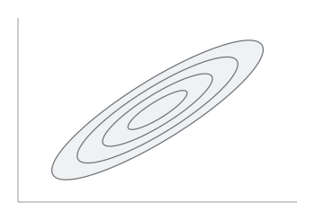
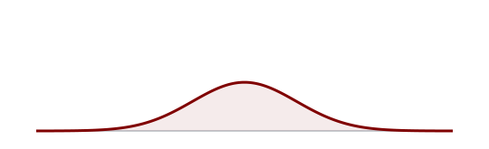
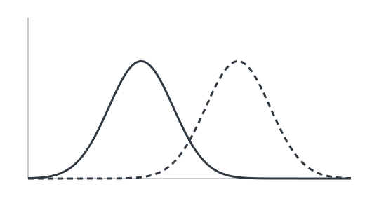
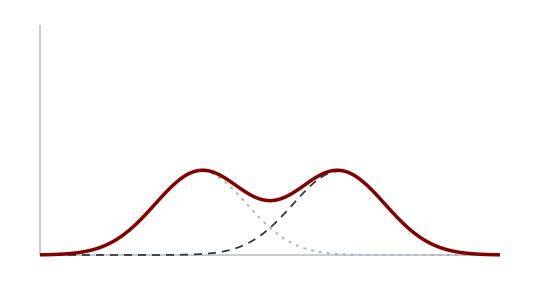
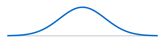
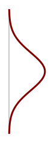
How much
information can a noisy response carry?
E.g., same transcription-factor concentration (\(h\) ) can lead to different gene expression
levels (\(u\) )
\[
{\color{#800000}\bar u(h)}
\]
Same concentration
\[
{\color{#0366c8}\sigma_U(h_0)}
\]
\[
p_{U\mid H}(u\mid h_0)
\]
\[
{\color{#800000}\bar u(h_0)}
\]
\[
{\color{#0366c8}\sigma_U(h_0)}
\]
\[
p_{U\mid H}(u\mid h)=\mathcal N\!\left({\color{#800000}\bar
u(h)},{\color{#0366c8}\sigma_U^2(h)}\right)
\]
What is the maximum information a response can carry?
\[
C=\sup_{p_H} I(H;U)
\]
Maximum information
Fix the response, noise and input range\(p_H(h)\)
Derivation: small-noise information and its maximum
Tkačik, Callan & Bialek, Phys. Rev. E 78, 011910 (2008)
Begin with transcription-factor concentration and mean gene
expression. The centered mean-response curve is the only first visual.
Move the same curve left, retaining its size and coordinates, and add
repeated-response variability around one selected input h0. The right
conditional density appears next; its mean and standard deviation give
the Gaussian conditional-response approximation. The final step retains
the response law while asking how input use affects the largest
achievable mutual information.
The saturating curve is an analytic illustration,
ubar(h)=expm1(-2.5h)/expm1(-2.5), h in [0,1]. The noise-band
illustration has constant standard deviation0.065 and selects h0=0.45;
the one-dimensional conditional density is schematic. The general
conditional law permits input-dependent sigma_U(h). The capacity
calculation holds the conditional law and input range fixed and
optimizes the normalized input distribution. The following small-noise
calculation assumes a smooth monotone mean response, positive small
noise, and neglects endpoint smoothing. Tkačik, Callan and Bialek,
Information capacity of genetic regulatory elements (PRE2008), provides
the capacity construction; the curve is a teaching illustration. Both
entropy calculations remain in the derivation.
\[
p_{U\mid H}(u\mid h)=\mathcal N\!\left({\color{#800000}\bar
u(h)},{\color{#0366c8}\sigma_U^2(h)}\right)
\]
\[
\begin{aligned}I(H;U)\simeq&-\int p_H(h)\log\frac{p_H(h)}{|\bar
u^{\prime}(h)|}\,dh+\\&-\int p_H(h)\log[\sqrt{2\pi
e}\sigma_U(h)]\,dh\end{aligned}
\]
For small noise, information depends on the response
derivative
Channel capacity : \(C=\sup_{p_H} I(H;U)\)
What is the input distribution that maximizes mutual information?
\[
{\color{#0366c8}p_H^*(h)}=\frac{1}{Z}\,\frac{|{\color{#800000}\bar
u^{\prime}(h)}|}{\sigma_U(h)}
\]
\(Z\) makes the total probability
equal to one
\[
\delta h(h)=\frac{\sigma_U(h)}{|\bar
u^{\prime}(h)|}\qquad\Rightarrow\qquad p_H^*(h)\propto\frac{1}{\delta
h(h)}
\]
Larger optimal density where nearby inputs
For constant noise, the optimal input density follows the response
slope
The response is steeper at smaller \(h\) , so the optimal input density is larger
there
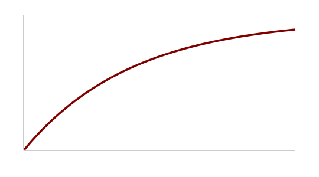
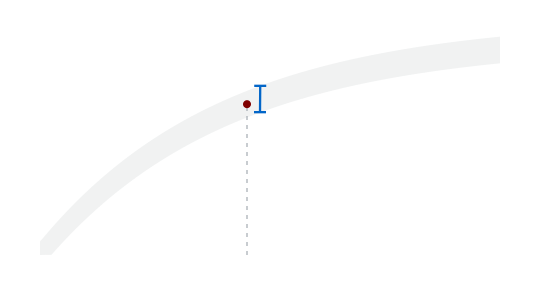
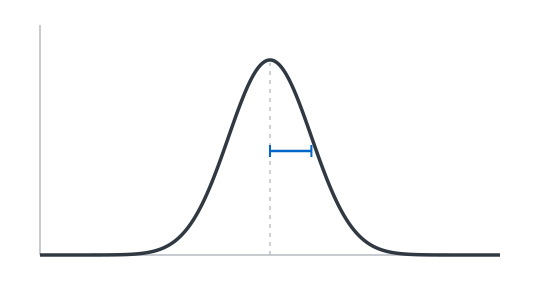
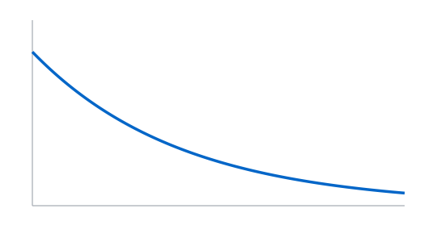
Average
the noise entropy over the input distribution
At a fixed input \(h\) , the response
noise is Gaussian
\[
-\log p_{U\mid H}(u\mid h)=\log[\sqrt{2\pi}\sigma_U(h)]+\frac{[u-\bar
u(h)]^2}{2\sigma_U^2(h)}
\]
\[
\mathcal H(U\mid H=h)=-\mathbb{E}[\log p_{U\mid H}(U\mid h)\mid H=h] =
\log[\sqrt{2\pi e}\sigma_U(h)]
\]
The expectation over responses at fixed environment is the response
noise
\[
\mathbb{E}[(U-\bar u(h))^2\mid H=h]=\sigma_U^2(h)
\]
\[
\begin{aligned}\mathcal H(U\mid
H=h)&=\log[\sqrt{2\pi}\sigma_U(h)]+\frac{\sigma_U^2(h)}{2\sigma_U^2(h)}\\&=\log[\sqrt{2\pi
e}\sigma_U(h)]\end{aligned}
\]
Average this noise entropy over the input density \(p_H(h)\)
\[
\mathcal H(U\mid H)=\int p_H(h)\log[\sqrt{2\pi e}\sigma_U(h)]\,dh
\]
Tkačik, Callan & Bialek, Phys. Rev. E 78, 011910 (2008)
Tkačik, Callan and Bialek, Information capacity of genetic regulatory
elements (PRE 2008), Sec. IIA Eqs.2–9 supplies this derivation. Their
c,g are our h,u; their bits are converted here to nats. Information flow
and optimization in transcriptional regulation (PNAS 2008) is the
biological application. Keep the conditional channel and range fixed and
vary only p_H. Capacity is a benchmark, not an assertion that an
organism controls its environment or universally maximizes information.
The noise entropy is conditional; the response mixture itself is
generally not Gaussian. See study notes 13–15.
Average this noise entropy over the input density \(p_H(h)\)
\[
\mathcal H(U\mid H)=\int p_H(h)\log[\sqrt{2\pi e}\sigma_U(h)]\,dh
\]
Small
noise makes the response entropy tractable
The other term in mutual information is the entropy of all
responses
\[
p_U(u)=\int p_H(h)p_{U\mid H}(u\mid h)\,dh
\]
\[
\mathcal H(U)=-\int p_H(h)\,\mathbb{E}[\log p_U(U)\mid H=h]\,dh
\]
Write each response as its mean plus a fluctuation
\[
U=\bar u(h)+\delta u,\quad \mathbb{E}[\delta u\mid h]=0,\quad
\mathbb{E}[\delta u^2\mid h]=\sigma_U^2(h)
\]
Expand across the narrow noise width
\[
\mathbb{E}[f(U)\mid h]=f(\bar
u(h))+\tfrac12\sigma_U^2(h)f^{\prime\prime}(\bar u(h))+\cdots
\]
Set \(f=\log p_U\) and keep the
first term\(p_U\) must vary little
across the noise width
\[
\mathcal H(U)\simeq-\int p_H(h)\log p_U(\bar u(h))\,dh
\]
\[
Y=\bar u(H),\qquad p_Y(\bar u(h))|\bar u^{\prime}(h)|\,dh=p_H(h)\,dh
\]
Monotone mean and small noise away from endpoints: \(p_U\simeq p_Y\)
\[
p_Y(\bar u(h))=\frac{p_H(h)}{|\bar u^{\prime}(h)|}
\]
\[
\mathcal H(U)\simeq-\int p_H(h)\log\frac{p_H(h)}{|\bar
u^{\prime}(h)|}\,dh
\]
Tkačik, Callan & Bialek, Phys. Rev. E 78, 011910 (2008)
Tkačik, Callan and Bialek, Information capacity of genetic regulatory
elements (PRE 2008), Sec. IIA Eqs.2–9 supplies this derivation. Their
c,g are our h,u; their bits are converted here to nats. Information flow
and optimization in transcriptional regulation (PNAS 2008) is the
biological application. Keep the conditional channel and range fixed and
vary only p_H. Capacity is a benchmark, not an assertion that an
organism controls its environment or universally maximizes information.
The noise entropy is conditional; the response mixture itself is
generally not Gaussian. See study notes 13–15. The Taylor step and
deterministic density transformation are separate approximations. See
notes 13.D2 for their conditions.
Capacity grows with the number of resolvable
input levels
Two representative inputs from a continuous range
\[
{\color{#800000}p(u\mid h_2)}
\]
\[
{\color{#800000}p(u\mid h_2)}
\]
Less overlap makes nearby inputs easier to distinguish
Capacity depends on the distinguishable input intervals across the
full input range
\[
C\simeq\log\!\left[\int_{h_{\min}}^{h_{\max}}\frac{dh}{\sqrt{2\pi
e}\,\delta h(h)}\right], \quad \delta h(h)=\frac{\sigma_U(h)}{|\bar
u^{\prime}(h)|}
\]
Smooth monotone response · small noise · fixed input range
\[
\delta h(h)=\frac{\sigma_U(h)}{|\bar u^{\prime}(h)|}
\]
\[
\sigma_U\longrightarrow\sigma_U/2\quad\Longrightarrow\quad
C\longrightarrow C+\log2
\]
Halving the noise adds one bit of information capacity
Compare uniform and optimized input use
\[
I\!\left(H(t);U(t)\right)
\]
Information available at one time
A response record can also carry information across times
Derivation: capacity from the optimal input distribution
Tkačik, Callan & Bialek, Phys. Rev. E 78, 011910 (2008)
First inspect two conditional response distributions for two
representative inputs, with a fixed separation of their means. Add the
narrower-noise comparison while retaining the broad case. The pair
illustrates resolution of nearby inputs; the capacity result concerns
the full continuous input range, not a binary channel.
For a smooth monotone mean response and small positive output noise,
the optimal input law gives C approximately log of the integral
dh/[sqrt(2 pi e)delta h(h)], with delta h(h)=sigma_U(h)/|ubar prime(h)|.
The finite integral spans the fixed allowed input range. This is the
leading small-noise approximation; boundary smoothing and nonmonotone
mean responses require further treatment. The normalization and
variational calculation remain in the derivation. Halving sigma_U
everywhere while preserving the response and range halves delta h,
doubles that integral, and increases the approximate capacity by log2
nats, one bit. This increase applies when the small-noise assumptions
remain valid.
The experiment keeps the original uniform/optimized input comparison
and quantitative axes. Its initial curvature is -2.5 with noise0.025 and
comparison noise0.05. Finally, distinguish information between
simultaneous H(t),U(t) from information in complete records and retain
the optional trajectory link. The main route proceeds to relative
timescales and equal-time information.
\[
\sigma_U\longrightarrow\sigma_U/2\quad\Longrightarrow\quad
C\longrightarrow C+\log2
\]
Halving the noise adds one bit of information capacity
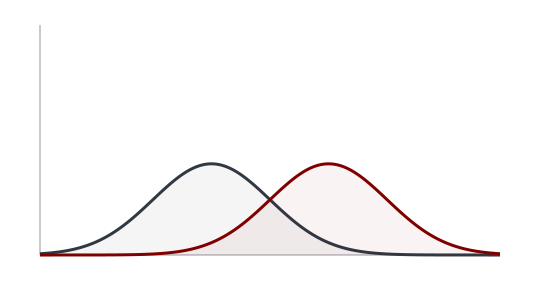
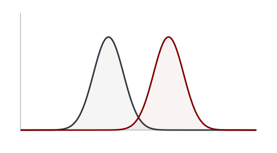
Substitute
the optimal input density to obtain capacity
Finite input range · monotone smooth mean · small Gaussian noise
Negligible boundary effects
\[
p_H^*(h)=K\frac{|\bar u^{\prime}(h)|}{\sigma_U(h)}
\]
\[
1=K\int_{h_{\min}}^{h_{\max}}\frac{|\bar
u^{\prime}(h)|}{\sigma_U(h)}\,dh=KZ\quad\Longrightarrow\quad K=1/Z
\]
\[
I_{\rm app}[p_H^*]=\int p_H^*(h)\log\frac{|\bar
u^{\prime}(h)|}{\sqrt{2\pi e}\sigma_U(h)[|\bar
u^{\prime}(h)|/(Z\sigma_U(h))]}\,dh
\]
The logarithm becomes constant and \(\int
p_H^*(h)\,dh=1\)
\[
C_{\rm app}=I_{\rm app}[p_H^*]=\log\frac{Z}{\sqrt{2\pi e}}
\]
Every other input density gives less information
\[
\begin{aligned}I_{\rm app}[p_H]&=C_{\rm app}-\int
p_H(h)\log\frac{p_H(h)}{p_H^*(h)}\,dh\\&=C_{\rm app}-D_{\rm
KL}(p_H\Vert p_H^*)\le C_{\rm app}\end{aligned}
\]
Relative entropy is nonnegative, with equality at the normalized
optimum
For a linear response with constant noise
\[
\bar u(h)=a h+b,\quad\sigma_U(h)=\sigma,\quad L=h_{\max}-h_{\min}
\]
\[
Z=|a|L/\sigma,\qquad p_H^*=1/L,\qquad C_{\rm
app}=\log\frac{|a|L}{\sqrt{2\pi e}\sigma}
\]
A larger output range \(|a|L\)
relative to noise gives higher capacity
Tkačik, Callan & Bialek, Phys. Rev. E 78, 011910 (2008)
Tkačik, Callan and Bialek, Information capacity of genetic regulatory
elements (PRE 2008), Sec. IIA Eqs.2–9 supplies this derivation. Their
c,g are our h,u; their bits are converted here to nats. Information flow
and optimization in transcriptional regulation (PNAS 2008) is the
biological application. Keep the conditional channel and range fixed and
vary only p_H. Capacity is a benchmark, not an assertion that an
organism controls its environment or universally maximizes information.
The noise entropy is conditional; the response mixture itself is
generally not Gaussian. See study notes 13–15.
When does
an interaction carry information across timescales?
Two molecules switch between two states \(A\) and \(B\) on two different
timescales \(\tau_1\) and
\(\tau_2\)
Baseline switching rates: \(1/\tau_1\) and \(1/\tau_2\)
Interaction \(c\) : first molecule in
state \(B_1\) accelerates \(A_2\to B_2\) for the second
\[
\frac{1}{\tau_2}\quad\longrightarrow\quad\frac{1+c}{\tau_2}\quad\text{when
}X_1=B_1
\]
How much does the current state of \(X_2\) tell us about \(X_1\) ?
\[
I_{12}=I(X_1;X_2)=\sum_{x_1,x_2}p_{12}(x_1,x_2)\log_2\frac{p_{12}(x_1,x_2)}{p_1(x_1)p_2(x_2)}
\]
Nicoletti & Busiello, Phys. Rev. X 14, 021007 (2024); J.
Stat. Mech. 124004 (2025)
Build the two-layer model before asking for its information. Each
molecule has two configurations A_mu and B_mu. Initially show only the
two switching processes, with equal forward and backward baseline rates
1/tau_mu as in the plotted binary example. The next reveal adds the
regulation: while X_1=B_1, the forward rate A_2 to B_2 increases from
1/tau_2 to (1+c)/tau_2. It returns to 1/tau_2 when X_1=A_1; the reverse
rate stays 1/tau_2. The dotted link therefore changes a transition rate.
The state of molecule1 remains autonomous. Finally ask what the current
state of the response tells us about the current regulator. The
probabilities in I_12 are the stationary joint law and its marginals.
Lowercase x_1 and x_2 range over A_1/B_1 and A_2/B_2. Use the same
mutual-information definition introduced earlier, here with a sum over
four joint states and base-two logarithms to match the published curve.
The next subslide holds c=10 and all baseline rate weights fixed while
changing tau_1/tau_2. Source: Nicoletti and Busiello, Information
Propagation in Multilayer Systems with Higher-Order Interactions across
Timescales, Section II and Figure1a.
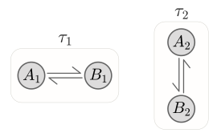
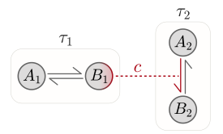
Changing the
timescales changes the information
Keep the interaction fixed: \(X_1\longrightarrow X_2,\quad c=10\)
Direct interaction \(\tau_1\ll\tau_2\)
\(X_1\) switches many times before
\(X_2\) changes,\(X_2\) inherits an effective switching
rate
\[
p_{12}\simeq p_1p_2,\qquad I_{12}\to0
\]
Feedback interaction \(\tau_1\gg\tau_2\)
\(X_2\) relaxes while \(X_1\) stays fixed,
\[
p_{12}\simeq p_1p_{2|1}^{\mathrm{st}},\qquad I_{12}>0
\]
\(X_1\longrightarrow X_2,\qquad c=10\)
Derivation: the two-layer calculation
Nicoletti & Busiello, Phys. Rev. X 14, 021007 (2024); J.
Stat. Mech. 124004 (2025)
The physical coupling stays X_1 to X_2. The labels direct and
feedback refer to its direction relative to the timescale order. With
tau_1 much less than tau_2, molecule1 switches many times before
molecule2 responds. Averaging its state gives a fixed forward rate for
molecule2. The leading stationary joint law is p_1 p_2, hence the
current states share no mutual information. A finite ratio leaves a
residual dependence. With tau_1 much greater than tau_2, molecule2 can
relax at each fixed state of molecule1. Its two conditional
probabilities are P(B_2|A_1)=1/2 and P(B_2|B_1)=(1+c)/(2+c)=11/12 at
c=10. These distinct distributions make I_12 positive in this binary
example. In the factorization p_2|1 is the conditional stationary
response distribution; p_2 in the fast case is the stationary marginal
after averaging. The limiting factorizations are leading approximations
in separated timescales. The solid curve solves the four-state
stationary master equation at every finite timescale ratio; points are
the supplied simulations and dashed lines mark limiting values. The
final reveal lets the audience vary that same ratio, retaining the
figure style. The derivation contains the rates, averaging calculation
and stationary laws. For more general models a nonzero coupling need not
give distinct conditional stationary distributions; the following
structural claims therefore use can be positive.
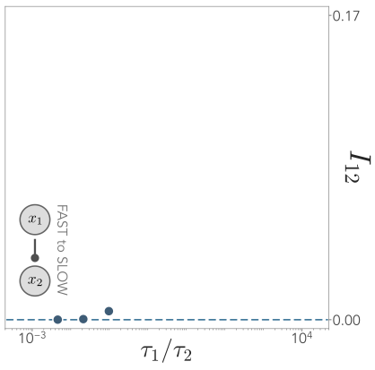
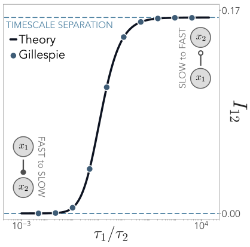
Fokker–Planck
operators for continuous systems
For simplicity, take continuous degrees of freedom (dofs) \(x_1,x_2\) \(X_1\to X_2\) and the derivation is the same
for discrete systems
\[
\partial_t p_{12}=\left[\frac{\mathcal L_1}{\tau_1}+\frac{\mathcal
L_2(x_1)}{\tau_2}\right]p_{12}
\]
\[
\mathcal L_i p=-\partial_{x_i}\!\left[b_i
p\right]+\partial_{x_i}^{,2}\!\left[D_i p\right]
\]
\(b_i\) : drift \(D_i\) : diffusion\(\mathcal L_i\) acts only \(x_i\) , while other states enter as
parametric dependencies
For the two-state example, use transition operators and sums in the
same calculation
Nicoletti & Busiello, Phys. Rev. X 14, 021007 (2024); J.
Stat. Mech. 124004 (2025)
The discrete two-state main example follows Nicoletti and Busiello,
Information propagation in multilayer systems with higher-order
interactions across timescales, Physical Review X 14, 021007 (2024),
Section II. This derivation explicitly uses its continuous-state
counterpart: the Fokker-Planck construction in Nicoletti and Busiello,
Journal of Statistical Mechanics 124004 (2025), Section II. Coordinates
are scalar for clarity; the argument extends to multidimensional layers.
Noise acts independently in each coordinate, so there are no mixed
second derivatives. Assume a unique normalized stationary fast density
for each fixed slow state, a separation of relaxation times, and
vanishing probability flux at boundaries. Results are leading-order
after the initial fast transient. For the discrete example, transition
operators and sums replace differential operators and integrals. Use
base-two logarithms for mutual information and KL divergence, matching
the main two-state example.
Fast-to-slow
interaction: averaging defines the effective slow operator
Direct interaction : \(X_1\to X_2\) , with \(\tau_1\ll\tau_2\)
\[
s=\frac{t}{\tau_2},\quad\epsilon=\frac{\tau_1}{\tau_2}\ll1,\qquad\partial_s
p_{12}=\left[\epsilon^{-1}\mathcal L_1+\mathcal L_2(x_1)\right]p_{12}
\]
\[
p_{12}=p_{12}^{\rm eff}+\epsilon
p_{12}^{(1)}+\cdots\quad\Rightarrow\quad\mathcal L_1p_{12}^{\rm eff}=0
\]
\[
p_{12}^{\rm eff}=p_1^{\rm st}(x_1)\,p_2(x_2,s),\qquad \mathcal
L_1p_1^{\rm st}=0
\]
The autonomous fast regulator reaches its stationary distribution:
\(\int dx_1\,p_1^{\rm st}=1\)
Integrate the next order over \(x_1\) ; probability conservation removes the
fast operator
\[
\int dx_1\,\mathcal L_1p_{12}^{(1)}=0
\]
\[
\partial_s p_2=\underbrace{\int dx_1\,\mathcal L_2(x_1)\!\left[p_1^{\rm
st}(x_1)p_2\right]}_{\displaystyle \mathcal L_2^{\rm eff}p_2}
\]
The effective operator averages over the full distribution of the
fast input
\[
p_{12}^{\rm eff}=p_1^{\rm st}(x_1)\,p_2^{\rm
eff}(x_2,s)\qquad\Rightarrow\qquad I_{12}=0
\]
Nicoletti & Busiello, Phys. Rev. X 14, 021007 (2024); J.
Stat. Mech. 124004 (2025)
The discrete two-state main example follows Nicoletti and Busiello,
Information propagation in multilayer systems with higher-order
interactions across timescales, Physical Review X 14, 021007 (2024),
Section II. This derivation explicitly uses its continuous-state
counterpart: the Fokker-Planck construction in Nicoletti and Busiello,
Journal of Statistical Mechanics 124004 (2025), Section II. Coordinates
are scalar for clarity; the argument extends to multidimensional layers.
Noise acts independently in each coordinate, so there are no mixed
second derivatives. Assume a unique normalized stationary fast density
for each fixed slow state, a separation of relaxation times, and
vanishing probability flux at boundaries. Results are leading-order
after the initial fast transient. For the discrete example, transition
operators and sums replace differential operators and integrals. Use
base-two logarithms for mutual information and KL divergence, matching
the main two-state example. Here L1 has no x2 dependence. Integrate the
order-one equation to obtain the slow operator. Since p1st does not
depend on x2, this averages both the drift b2 and diffusion D2 over
p1st. It generally differs from substituting the mean x1 into nonlinear
coefficients. The effective slow density evolves on s; at stationarity
replace it by p2st,eff. Independence refers to the simultaneous
leading-order joint density, and does not remove the causal
interaction.
Slow-to-fast
interaction: same operator at frozen slow state
Feedback interaction : \(X_1\to X_2\) , with \(\tau_2\ll\tau_1\)
\[
s=\frac{t}{\tau_1},\quad\epsilon=\frac{\tau_2}{\tau_1}\ll1,\qquad\partial_s
p_{12}=\left[\mathcal L_1+\epsilon^{-1}\mathcal L_2(x_1)\right]p_{12}
\]
Hold \(x_1\) fixed while \(x_2\) relaxes under the original operator
\(\mathcal L_2(x_1)\)
\[
\mathcal L_2(x_1)\,p_{2|1}^{\rm st}(x_2|x_1)=0,\qquad\int
dx_2\,p_{2|1}^{\rm st}(x_2|x_1)=1
\]
Each frozen value of \(x_1\) can
give a different stationary response
\[
p_{12}(x_1,x_2,s)=p_{2|1}^{\rm st}(x_2|x_1)\,p_1(x_1,s)
\]
\[
\partial_s p_1=\int dx_2\,\mathcal L_1\!\left[p_{2|1}^{\rm
st}p_1\right]=\mathcal L_1p_1
\]
The slow operator is also unchanged; the fast conditional density
integrates to one
\[
\begin{aligned}p_2(x_2,s)&=\int dx_1\,p_1(x_1,s)p_{2|1}^{\rm
st}(x_2|x_1)\\[4pt]I_{12}&=\int dx_1\,p_1(x_1,s)D_{\rm
KL}\!\left[p_{2|1}^{\rm st}(\cdot|x_1)\,\Vert\,p_2\right]\end{aligned}
\]
Information is positive when the conditional response varies across
the populated input states
Nicoletti & Busiello, Phys. Rev. X 14, 021007 (2024); J.
Stat. Mech. 124004 (2025)
The discrete two-state main example follows Nicoletti and Busiello,
Information propagation in multilayer systems with higher-order
interactions across timescales, Physical Review X 14, 021007 (2024),
Section II. This derivation explicitly uses its continuous-state
counterpart: the Fokker-Planck construction in Nicoletti and Busiello,
Journal of Statistical Mechanics 124004 (2025), Section II. Coordinates
are scalar for clarity; the argument extends to multidimensional layers.
Noise acts independently in each coordinate, so there are no mixed
second derivatives. Assume a unique normalized stationary fast density
for each fixed slow state, a separation of relaxation times, and
vanishing probability flux at boundaries. Results are leading-order
after the initial fast transient. For the discrete example, transition
operators and sums replace differential operators and integrals. Use
base-two logarithms for mutual information and KL divergence, matching
the main two-state example. The one-way interaction makes L1 autonomous.
Although L1 differentiates x1 and therefore acts on the x1 dependence of
the conditional density, integration over x2 reduces the product to p1
by normalization. Thus L1 and L2 retain their original forms: the
approximation freezes the slow parameter in the fast stationary
equation. The mixture p2 is the actual marginal used in the KL
expression; positive information requires distinct conditional responses
on input states with nonzero probability.
Information generation by
feedback interactions
\[
\tau_1\ll\tau_2\ll\tau_3
\]
\(1\to2\to3\)
\(3\to2\to1\)
\[
I_{12}=I_{13}=I_{23}=0
\]
\(I_{12},\ I_{13},\ I_{23} \ge
0\)
Derivation: direct and feedback chains
Nicoletti & Busiello, Phys. Rev. X 14, 021007 (2024); J.
Stat. Mech. 124004 (2025)
The labels now follow the ascending timescale convention, so 1 is the
fastest layer and 3 the slowest. Compare two paths using the two-layer
mechanism just established. In the direct chain, each faster state has
been averaged when the next layer evolves; the leading joint law
factorizes and all pairwise mutual informations vanish. In the feedback
chain, a slow state conditions the next faster one and the conditional
dependence can propagate further. The three pairwise mutual informations
can therefore be positive. These are leading separated-timescale
statements; structurally allowed dependence can vanish at special
parameter choices. I_ij denotes I(X_i;X_j). The derivation contains both
factorizations and explains how indirect dependence survives
marginalization.
Direct
chains averaging and feedback chains conditional dependencies
Direct chain : \(1\to2\to3\) , with \(\tau_1\ll\tau_2\ll\tau_3\)
\[
\mathcal L_2^{\rm eff}p_2=\int dx_1\,\mathcal L_2(x_1)\!\left[p_1^{\rm
st}(x_1)p_2\right]
\]
\[
\mathcal L_3^{\rm eff}p_3=\int dx_2\,\mathcal L_3(x_2)\!\left[p_2^{\rm
st,eff}(x_2)p_3\right]
\]
Each layer receives an average over its faster input
\[
p_{123}^{\rm eff}=p_1^{\rm st}\,p_2^{\rm st,eff}\,p_3^{\rm
eff}(t),\qquad I_{12}=I_{13}=I_{23}=0
\]
Feedback chain : \(3\to2\to1\) , with \(\tau_1\ll\tau_2\ll\tau_3\)
\[
\mathcal L_1(x_2)p_{1|2}^{\rm st}=0,\qquad \mathcal L_2(x_3)p_{2|3}^{\rm
st}=0
\]
Both operators keep their original form, with each slower input held
fixed
\[
p_{123}=p_{1|2}^{\rm st}(x_1|x_2)\,p_{2|3}^{\rm st}(x_2|x_3)\,p_3(x_3,t)
\]
Nicoletti & Busiello, Phys. Rev. X 14, 021007 (2024); J.
Stat. Mech. 124004 (2025)
The discrete two-state main example follows Nicoletti and Busiello,
Information propagation in multilayer systems with higher-order
interactions across timescales, Physical Review X 14, 021007 (2024),
Section II. This derivation explicitly uses its continuous-state
counterpart: the Fokker-Planck construction in Nicoletti and Busiello,
Journal of Statistical Mechanics 124004 (2025), Section II. Coordinates
are scalar for clarity; the argument extends to multidimensional layers.
Noise acts independently in each coordinate, so there are no mixed
second derivatives. Assume a unique normalized stationary fast density
for each fixed slow state, a separation of relaxation times, and
vanishing probability flux at boundaries. Results are leading-order
after the initial fast transient. For the discrete example, transition
operators and sums replace differential operators and integrals. Use
base-two logarithms for mutual information and KL divergence, matching
the main two-state example. Layer indices are now ordered from fast to
slow. In the direct chain, define each stationary density by Li_eff
pi_st,eff=0, normalize it, and average the next operator. In the
feedback chain the intermediate state retains dependence on layer3, and
layer1 retains dependence on layer2. The resulting conditional
independence does not imply marginal independence of layers1 and3. All
unconditional pairs may carry information for nondegenerate
interactions.
Information propagation by
direct interactions
\[
\tau_1\ll\tau_2\ll\tau_3
\]
The slow dof \(3\) averages\(2\)
The fast dof \(1\) retains\(3\)
Only \(1\) and \(3\) share information
All three pairs can share information
\(f\) : strength of the slow-to-fast
interaction
Derivation: minimal propagation paths
Nicoletti & Busiello, Phys. Rev. X 14, 021007 (2024); J.
Stat. Mech. 124004 (2025)
Compare the original two mixed paths in the supplied vector figure.
For 2→3→1, layer2 is averaged before the slowest layer3 changes: layer3
can condition1, but the current state2 does not remain in their leading
joint law. For 3→1→2, the fast intermediate layer1 relaxes at fixed3;
averaging it produces an effective generator for2 which still depends
on3. Thus a direct step can propagate a slow condition that entered
through feedback. This is a minimal propagation path. The exact graph
criterion and both factorizations are in the overlay. The matrix entries
and information curves are the published binary examples, not a
universal promise of positive information for every coupling. At fixed3,
layers1 and2 are independent to leading order; mixing over3 can
correlate them. The term minimal refers to which intermediate timescales
occur, not the number of edges. The supplied diagrams and matrices are
complete panels without panel letters. The original paper contains a
conditioning-index typo for the first path; the overlay uses pi_1|3,
consistent with the graph.
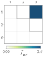
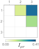
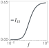
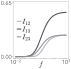
A
direct interaction can preserve dependence on a slower dof
\(2\to3\to1\) , with \(\tau_1\ll\tau_2\ll\tau_3\)
Layer 3 averages the input from 2; layer 1 responds to the frozen
state of 3
\[
\mathcal L_3^{\rm eff}p_3=\int dx_2\,\mathcal L_3(x_2)\!\left[p_2^{\rm
st}(x_2)p_3\right]
\]
\[
p_{123}^{\rm eff}=p_{1|3}^{\rm st}(x_1|x_3)\,p_2^{\rm st}(x_2)\,p_3^{\rm
eff}(x_3,t)
\]
\(3\to1\to2\) , with \(\tau_1\ll\tau_2\ll\tau_3\)
Average over the fast layer 1 while keeping the slow source \(x_3\) fixed
\[
\mathcal L_2^{\rm eff}(x_3)p_2=\int dx_1\,\mathcal
L_2(x_1)\!\left[p_{1|3}^{\rm st}(x_1|x_3)p_2\right]
\]
The effective operator for layer 2 still depends on \(x_3\)
\[
p_{123}^{\rm eff}=p_{1|3}^{\rm st}(x_1|x_3)\,p_{2|3}^{\rm
st,eff}(x_2|x_3)\,p_3(x_3,t)
\]
At fixed \(x_3\) , the two faster
layers are independent
\[
p_{12|3}^{\rm eff}=p_{1|3}^{\rm st}\,p_{2|3}^{\rm
st,eff}\qquad\Rightarrow\qquad I(X_1;X_2|X_3)=0
\]
Averaging over their shared slow source can correlate the two
layers
\[
p_{12}^{\rm eff}=\int dx_3\,p_{1|3}^{\rm st}(x_1|x_3)\,p_{2|3}^{\rm
st,eff}(x_2|x_3)\,p_3(x_3,t)
\]
Nicoletti & Busiello, Phys. Rev. X 14, 021007 (2024); J.
Stat. Mech. 124004 (2025)
The discrete two-state main example follows Nicoletti and Busiello,
Information propagation in multilayer systems with higher-order
interactions across timescales, Physical Review X 14, 021007 (2024),
Section II. This derivation explicitly uses its continuous-state
counterpart: the Fokker-Planck construction in Nicoletti and Busiello,
Journal of Statistical Mechanics 124004 (2025), Section II. Coordinates
are scalar for clarity; the argument extends to multidimensional layers.
Noise acts independently in each coordinate, so there are no mixed
second derivatives. Assume a unique normalized stationary fast density
for each fixed slow state, a separation of relaxation times, and
vanishing probability flux at boundaries. Results are leading-order
after the initial fast transient. For the discrete example, transition
operators and sums replace differential operators and integrals. Use
base-two logarithms for mutual information and KL divergence, matching
the main two-state example. These are the two three-layer paths in
Figure4 of the 2024 paper, expressed with continuous densities. The
first is a propagation path but fails the minimal-path criterion for
preserving source2 at target1. In the second, 3 to1 to2 is a minimal
propagation path: the internal layer1 is faster than target2, and
source3 is slower than target2. With x3 fixed, the effective operator
L2eff(x3) has stationary density p2|3st,eff. Conditional independence
follows from the leading factorization. Marginal dependencies are
permitted, not required for every parameter choice.
Effective
operators determine which slow dependencies survive
\(\tau_1\ll\tau_2\ll\cdots\ll\tau_N\) : relax
the fastest layer, average it, then continue
\[
\mathcal L_1\,p_{1|\rho(1)}^{\rm st}=0,\qquad\int
dx_1\,p_{1|\rho(1)}^{\rm st}=1
\]
\[
\mathcal L_\mu^{\rm eff} f=\int dx_1\cdots dx_{\mu-1}\,\mathcal
L_\mu\!\left[\left(\prod_{\nu<\mu}p_{\nu|\rho(\nu)}^{\rm
st,eff}\right)f\right]
\]
\(f\) is a density of the remaining
layers; their slow states stay fixed in the average
At each stage, find the normalized stationary density of the
effective operator
\[
\mathcal L_\mu^{\rm eff}\,p_{\mu|\rho(\mu)}^{\rm st,eff}=0,\qquad\int
dx_\mu\,p_{\mu|\rho(\mu)}^{\rm st,eff}=1
\]
\[
p_{1,\ldots,N}^{\rm eff}=p_N^{\rm
eff}(x_N,t)\prod_{\mu=1}^{N-1}p_{\mu|\rho(\mu)}^{\rm
st,eff}\!\left(x_\mu\mid\{x_\nu\}_{\nu\in\rho(\mu)}\right)
\]
\[
\partial_t p_N^{\rm eff}=\frac{1}{\tau_N}\mathcal L_N^{\rm eff}p_N^{\rm
eff}
\]
\(\rho(\mu)\) contains the slower
layers retained as conditions
A propagation path starts at a slower source and contains a direct
interaction
\[
\nu\to\cdots\to\mu:\quad\nu>\mu,\qquad \exists\ (\alpha\to\beta)\
\text{with }\alpha<\beta
\]
It is minimal when every internal layer is faster than the target
\(\mu\)
\[
\rho(\mu)=\left\{\nu>\mu:\ \nu\to\mu\text{ is an edge, or an mPP
}\nu\to\mu\text{ exists}\right\}
\]
These paths determine which slow states enter the effective
stationary densities
Nicoletti & Busiello, Phys. Rev. X 14, 021007 (2024); J.
Stat. Mech. 124004 (2025)
The discrete two-state main example follows Nicoletti and Busiello,
Information propagation in multilayer systems with higher-order
interactions across timescales, Physical Review X 14, 021007 (2024),
Section II. This derivation explicitly uses its continuous-state
counterpart: the Fokker-Planck construction in Nicoletti and Busiello,
Journal of Statistical Mechanics 124004 (2025), Section II. Coordinates
are scalar for clarity; the argument extends to multidimensional layers.
Noise acts independently in each coordinate, so there are no mixed
second derivatives. Assume a unique normalized stationary fast density
for each fixed slow state, a separation of relaxation times, and
vanishing probability flux at boundaries. Results are leading-order
after the initial fast transient. For the discrete example, transition
operators and sums replace differential operators and integrals. Use
base-two logarithms for mutual information and KL divergence, matching
the main two-state example. This is the hierarchical construction of the
2024 paper and the continuous Fokker-Planck treatment of the 2025 paper.
In the product use p1st,eff=p1st because no faster layer exists. The
operator acts on the full product inside the brackets before
integration: derivatives may act on conditional densities. If an
operator has no dependence on any faster state, normalization reduces
the averaged operator to its original form, including any frozen slower
dependencies. The slowest layer retains its time dependence. The mPP
definition is equivalent to the induced-subgraph definition in Appendix
C of the 2024 paper: retain the slower source and remove other layers
slower than the target. Paths identify allowed dependence; parameter
choices can yield additional independence.
Why do some biological
responses weaken when a stimulus repeats?
Habituation: a progressive decrease in the response to repeated
stimulation
Black: mean response \(\langle
U\rangle\) · Gray: storage buildup
A long pause allows the response to recover
Idea: habituation from slow negative feedback
Nicoletti et al. , eLife 13, RP99767 (2025)
Figure/model conditions: Model averages over repeated trials with the
same input statistics
Paper: Optimal information gain at the onset of habituation to
repeated stimuli, eLife 13:RP99767 (2025), Version of Record, DOI
10.7554/eLife.99767.3. This section applies the preceding PRX/JStat
separation of timescales to a recurrent biological architecture. Start
with the phenomenon before introducing its rates. The readout U is a
molecule count whose mean measures the model’s response. Repeated
stimulation lowers the response even though the stimulation protocol is
unchanged. After a sufficiently long pause, the response returns. That
comparison motivates a slowly relaxing internal state.
These are model curves from Figure 2, not experimental recordings.
Black is mean readout activity; gray is storage buildup, shown on the
same panel as a qualitative guide. The input is a fluctuating positive
signal H with an exponential distribution whose mean switches between
background and stimulus values. Identical stimulation means identical
input statistics during successive pulses, not a deterministic signal
with zero entropy. The plotted time units are those of the published
figure. Its habituation threshold is an operational criterion for the
change between consecutive response peaks, not a thermodynamic phase
transition. The next slide identifies the storage mechanism.
Figures on this slide use the complete labeled panels from the
original SVGs supplied by the author. Text is outlined in the portable
display copies; all curves, axes, legends and embedded raster layers
retain their original geometry. The original six SVG files and full
portable figures are included in assets/habituation.
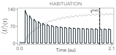
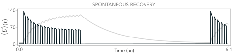
Slow storage changes the
response to the next stimulus
\(H\) : input · \(R\) : receptor · \(U\) : readout · \(S\) : storage
\[
\tau_U\ll\tau_R\ll\tau_S\approx\tau_H
\]
From the previous considerations:
Average the fast response
\[
\begin{gathered}p^\mathrm{eff}(u,r,s,h;t)\\=p_{U|R}^\mathrm{eff,st}(u\mid
r)\,p_{R|S,H}^\mathrm{eff,st}(r\mid s,h)\,F(s,h;t)\end{gathered}
\]
Receptor and readout follow
\(F\) changes as storage builds and
decays
Derivation: fast response laws and slow storage
Nicoletti et al. , eLife 13, RP99767 (2025)
Figure/model conditions: Separated timescales; \(\pi\) : fast stationary distribution; \(F\) : joint distribution of storage and
input
Paper: Optimal information gain at the onset of habituation to
repeated stimuli. The notation continues the main lecture: H is the
environment, R the receptor and U the readout. S is the additional
storage variable. The published architecture and notation are retained
so the figure and calculations agree. Lowercase letters are realizations
of the corresponding random variables. The slow storage feeds back on
receptor deactivation. It is a separate degree of freedom, so the
readout can respond rapidly while the system retains a slowly changing
internal state.
The causal loop H → R → U → S → R is not ordered by speed. In the
assumed hierarchy, U is fastest, followed by R, and S and H are slow.
Reuse the conditional-stationary construction already established for
the PRX/JStat block: relax U at fixed R, relax R at fixed S,H, and
retain the slow joint distribution F. The displayed law is leading
order, not an exact finite-separation factorization. Its time dependence
remains in F; the system need not be globally stationary. The first
derivation computes the conditional laws; the second averages readout
activity into the storage transition rates. The stimulus protocol
changes the input distribution on the slow scale. A scalar ordering
alone does not produce habituation: storage-dependent negative feedback
and finite storage relaxation are also required.
Figures on this slide use the complete labeled panels from the
original SVGs supplied by the author. Text is outlined in the portable
display copies; all curves, axes, legends and embedded raster layers
retain their original geometry. The original six SVG files and full
portable figures are included in assets/habituation.
\[
\begin{gathered}p^\mathrm{eff}(u,r,s,h;t)\\=p_{U|R}^\mathrm{eff,st}(u\mid
r)\,p_{R|S,H}^\mathrm{eff,st}(r\mid
s,h)\,p^\mathrm{eff}_{S,H}(s,h;t)\end{gathered}
\]
The timescale-separated solution is controlled by the joint
evolution of \(S\) and \(H\)
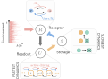
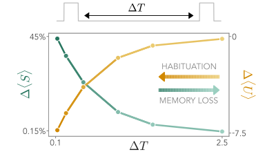
Fast receptor
activity determines the readout distribution
Freeze storage \(s\) and input \(h\) while the fast variables relax
\[
a(h)=e^{-\beta\Delta E}(1+e^{\beta h}),\qquad
b(s)=1+e^{\beta\kappa\sigma s/N_S}
\]
\[
\begin{gathered}a(h)(1-\theta)=b(s)\theta\\p_{R|S,H}^{\mathrm{eff,st}}(r=1\mid
s,h)=\theta(s,h)=\frac{a(h)}{a(h)+b(s)}\end{gathered}
\]
\(\beta\) : inverse temperature;
\(\Delta E\) : receptor barrier; \(\kappa\) : inhibition strength\(\sigma\) : cost per storage unit; \(N_S\) : storage capacity
\[
\begin{gathered}\mu_r=e^{-\beta(V-gr)},\qquad\mu_rp_{U|R}^{\mathrm{eff,st}}(u\mid
r)=(u+1)p_{U|R}^{\mathrm{eff,st}}(u+1\mid
r)\\p_{U|R}^{\mathrm{eff,st}}(u\mid
r)=e^{-\mu_r}\frac{\mu_r^u}{u!}\end{gathered}
\]
Average the Poisson readout laws over receptor activity
\[
\begin{aligned}p_{U|S,H}^{\mathrm{eff,st}}(u\mid
s,h)&=[1-\theta(s,h)]\operatorname{Pois}(u;\mu_0)+\theta(s,h)\operatorname{Pois}(u;\mu_1)\\\bar
u(s,h)&=[1-\theta(s,h)]\mu_0+\theta(s,h)\mu_1\end{aligned}
\]
Equal bare receptor-pathway rates, in units of \(\tau_R^{-1}\) ; frozen slow variables
\(V\) : readout production cost;
\(g\) : receptor-induced reduction
(paper’s \(c\) )
Nicoletti et al. , eLife 13, RP99767 (2025)
Paper: Optimal information gain at the onset of habituation to
repeated stimuli. The purpose is to compute the fast conditional laws
used on the parent slide. For g=1, sum the sensing and internal reaction
paths: the total activation rate is tau_R^{-1} exp(-beta Delta
E)(1+exp(beta h)), and deactivation is tau_R^{-1}(1+exp(beta kappa sigma
s/N_S)). The common rate factor cancels in the stationary active
probability theta. Increasing s increases deactivation at fixed h. Do
not confuse the energetic parameter c in the readout production rate
with the ligand concentration of the Berg–Purcell section; it is the
paper’s local notation, defined on its reveal.
The next reveal uses the published readout rates: birth mu_r/tau_U
and death u/tau_U. Their stationary recursion gives the normalized
Poisson law. Finally sum over the binary receptor to obtain the
conditional mixture at fixed s,h. Its mean ubar is a mixture of the two
conditional means. This is precisely the fast-variable averaging needed
before evolving storage. All formulas follow the published rates within
the stated timescale limit.
Averaging
fast activity gives the slow storage dynamics
Average the storage birth rate over fast readout activity
\[
\begin{gathered}w_{s\to s+1}(u)=\frac{u
e^{-\beta\sigma}}{\tau_S}\\b_s(h)=\frac{\bar
u(s,h)e^{-\beta\sigma}}{\tau_S},\qquad
d_s=\frac{s}{\tau_S}\end{gathered}
\]
The conditional mean sets storage production, and each stored unit
decays spontaneously
Evolve the joint distribution of storage and input
\[
\begin{aligned}\partial_tp^{\mathrm{eff}}_{S,H}(s,h;t)&=\mathcal L_H
p^{\mathrm{eff}}_{S,H}(s,h;t)+b_{s-1}(h)p^{\mathrm{eff}}_{S,H}(s-1,h;t)+d_{s+1}p^{\mathrm{eff}}_{S,H}(s+1,h;t)\\&\quad-[b_s(h)+d_s]p^{\mathrm{eff}}_{S,H}(s,h;t)\end{aligned}
\]
\[
\frac{d\langle S\rangle}{dt}=\langle b_S(H)-d_S\rangle
\]
Responses increase production, while surviving storage changes the
next response, establishing a feedback loop
\(p^{\mathrm{eff}}_{S,H}(s,h;t)\) ;
\(\mathcal L_H\) evolves the
input\(0\le s\le N_S\) ; reflecting
boundaries \(d_0=0\) , \(b_{N_S}=0\) ; evolve \(p^{\mathrm{eff}}_{S,H}\) numerically
Nicoletti et al. , eLife 13, RP99767 (2025)
Paper: Optimal information gain at the onset of habituation to
repeated stimuli. This is the same probability-conserving projection
used in the PRX/JStat calculation, applied to the storage birth–death
process. The explicit birth–death generator on the second reveal spells
out the paper’s effective slow operator; it is not a new model. b_N_S is
set to zero at the reflecting upper boundary and d_0 is zero. The mean
equation follows by multiplying by s and summing: each birth adds one
and each death subtracts one. A closed autonomous equation for the mean
alone would require a further approximation, because the production term
depends on the joint distribution of S and H. We do not make that
approximation.
The published calculation evolves the slow distribution with the
specified switching input statistics using a short-time iterative
scheme. During weak background input there may still be production, so
relaxation is toward the background distribution, not necessarily toward
zero. We therefore avoid claiming an exact exp(-Delta T/tau_S) law for
the entire feedback circuit. The next main slide uses the paper’s
numerical curves to show how pause duration changes the retained
state.
A stationary
information–energy tradeoff selects operating parameters
Fix the input statistics: \(p_H^{\mathrm{st}}(h)=H_{\mathrm{st}}^{-1}e^{-h/H_{\mathrm{st}}}\)
\[
I^{\mathrm{st}}_{U,H}(\beta,\sigma),\qquad
E_{\mathrm{tot}}^{\mathrm{st}}=\delta Q_R^{\mathrm{st}}+\frac{\tau_S
J_{\mathrm{int}}^{\mathrm{st}}}{\sigma}
\]
\[
\delta
Q_R^{\mathrm{st}}=\beta\left(H_{\mathrm{st}}+\kappa\sigma\frac{\langle
S\rangle_{\mathrm{st}}}{N_S}\right)
\]
\(\delta Q_R\) : receptor-cycle
dissipation measure; \(J_{\mathrm{int}}\) : net storage energy
flux\(\tau_S
J_{\mathrm{int}}/\sigma\) is its normalized contribution
Choose the relative weight of information and energetic cost
\[
\mathcal L(\beta,\sigma)=\gamma
I^{\mathrm{st}}_{U,H}(\beta,\sigma)-(1-\gamma)E_{\mathrm{tot}}^{\mathrm{st}}(\beta,\sigma)
\]
\[
0\le\gamma\le1,\qquad(\beta^*,\sigma^*)\in\operatorname*{arg\,max}_{\beta,\sigma}\mathcal
L(\beta,\sigma)
\]
Vary \(\gamma\) to find the best
stationary information at different costs
Test the selected parameters under repeated stimulation
High information gain and intermediate response reduction\(\beta\) ;
vertical axes are rescaled
Nicoletti et al. , eLife 13, RP99767 (2025)
Paper: Optimal information gain at the onset of habituation to
repeated stimuli. This optional calculation introduces a second
optimization problem, separate from both channel capacity and maximizing
the gain Delta I. The input distribution and model family are fixed. The
objective uses stationary information during prolonged stimulation and
the energetic accounting of Eqs.13–15. gamma sets their relative weight.
The normalized cost is the paper’s measure; it must not be relabelled as
an unnormalized power in watts. J_int is sigma times the net storage
birth–death flux, with reflecting boundaries accounted for. At a true
stationary storage distribution its net accumulation term is zero; the
receptor contribution still matters. Receptor-cycle affinity and a
flux-weighted total entropy-production rate are different
quantities.
The paper explores the front in beta,sigma and interprets it as the
storage cost to choose at a given beta, since temperature is generally
environmental. The comparison also fixes or calibrates kappa through the
stated reference-signal condition. Weighted-sum optimization identifies
supported efficient choices; it is not a dynamical adaptation rule. Only
after obtaining these stationary choices do we test information gain
under repeated input. In the published cross-section, the green/blue
curve is information gain and the dark curve is the signed mean-response
change, each rescaled; the gray band marks the selected parameter region
for the indicated beta range. The agreement is qualitative and within
the stated model. If the full energetic argument is too distracting in
the lecture, return directly to the main gain map.
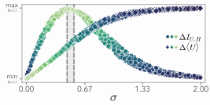
A slow internal state
captures features of neural habituation
Repeated looming stimuli in a zebrafish larva
Top: recorded calcium activity · Bottom: model activity
Separate PCA projections of recorded and model activity
How do interactions within a neural circuit change encoding and
response time?
Nicoletti et al. , eLife 13, RP99767 (2025)
Figure/model conditions: Qualitative comparison of response dynamics;
data and model use separate PCA projections
Paper: Optimal information gain at the onset of habituation to
repeated stimuli. End the section by connecting the minimal mechanism to
a neural observation, without changing the evidential status of either.
The experiment measures responses to repeated looming stimulation with
volumetric imaging. The model is extended by mapping a readout unit to a
subpopulation of stochastically activated binary neurons. Its parameters
and stimulation timings are chosen to give a comparable initial activity
and response decrement. This is a qualitative comparison, not an
independent identification of the storage molecule or a measurement that
the animal maximizes mutual information.
The two PCA plots are computed separately on experimental and
simulated activity. Both show progressive changes across repeated
stimuli. Their coordinate scales and evoked-response dynamics are not
interchangeable; the model’s stimulus switches on/off, while the
experimental response has additional temporal structure. The final
question introduces the next paper: replace the minimal receiving unit
with explicit excitatory and inhibitory populations and ask how circuit
parameters change both distinguishability and actual relaxation modes.
The E/I paper studies a distinct model and input protocol; it does not
constitute a microscopic validation of the habituation mechanism. The
continuity is the role of internal dynamics and timescales in
encoding.
Figures on this slide use the complete labeled panels from the
original SVGs supplied by the author. Text is outlined in the portable
display copies; all curves, axes, legends and embedded raster layers
retain their original geometry. The original six SVG files and full
portable figures are included in assets/habituation.
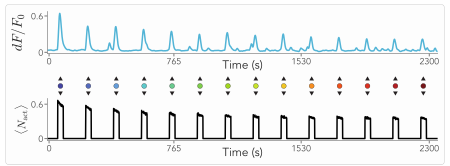
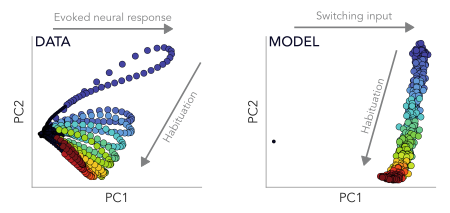
E/I balance controls how
well inputs can be distinguished
Approaching the edge of linear stability
\[
k_c=1-\frac rw,\qquad k>k_c
\]
\[
k\to k_c:\quad I(\mathbf U;H)\longrightarrow\mathcal H(H)
\]
Dotted curve: stability boundary \(k=k_c\)
Information depends on signal relative to noise
\[
p(\mathbf u\mid i)=\mathcal N(\mathbf m_i,\Sigma)
\]
\[
d_{ij}^2=(\mathbf m_i-\mathbf m_j)^T\Sigma^{-1}(\mathbf m_i-\mathbf m_j)
\]
With \(\delta=w(k-k_c)\) ,\(1/\delta\) \(1/\sqrt\delta\)
A nonlinear activation function turns the edge of stability into an
information peak
Derivation: neural mixture bounds and E/I stability
Barzon, Busiello & Nicoletti, PRL 134, 068403 (2025)
Embedded interpretation: use the final two reveals for the parameter
comparison, within this slide’s existing time. Controls allow further
exploration; Explore retains the full experiment. The PDF records both
prescribed states.
Narrative and delivery: The previous slide varied input speed at a
fixed circuit. Now use sufficiently persistent input, keep its
three-label ensemble fixed, and tune relative inhibition k. This is the
main result of Excitation-Inhibition Balance Controls Information
Encoding in Neural Populations, not an optional aside. Read Fig.2b from
right to left: decreasing distance to the stable edge increases
information toward the 1.5-bit input entropy. The horizontal distance is
k−k_c on the stable side; k_c=1−r/w includes leak and need not equal
one. The two colors correspond to w=1.05 and w=10. Dots are numerical
integration of a stationary Gaussian mixture; dashed curves are
analytical bounds. These are not finite-switching simulations.
101:30–103:30 min (2 min). Within two minutes: read the contour (25
s), explain covariance-scaled separation (20 s), state the relaxation
constraint (20 s), compare the nonlinear peak panels (35 s), and use the
embedded bounds only if time permits (20 s). The linear conditional
means are m_i=(rI−A)^{-1}h_i e_E and the common covariance solves a
Lyapunov equation. Both signal and noise amplify, so larger mean
response alone does not prove more information. Their Mahalanobis
distance diverges as the accessible stable edge is approached; the lower
and upper mixture bounds then converge to the finite label entropy.
Appendix 51 supplies the mixture-bound calculation; appendix 52 gives
the eigenvalues, covariance and order of limits. They justify this
already visible main result.
The slowest relaxation time diverges. Take the slow-input stationary
limit before approaching k_c. At any fixed finite input timescale, the
adiabatic approximation eventually fails; exactly at the edge the linear
noisy circuit has no normalizable stationary density. This reconnects
E/I balance to the lecture’s central timescale question rather than
presenting optimal encoding as a free gain.
Main-deck nonlinear comparison: in published Fig.2c,d the saturating
model f(x)=tanh(x) also shows a numerical information maximum near the
linear boundary. Those k-nearest-neighbor estimates use finite input
switching times 250 and 1000; panels c and d change both stimulus
amplitude and noise. They are not the exact linear Gaussian-mixture
theorem. Fig.3 instead studies a continuous prolonged random stimulus;
its divergent long-time information is a different input protocol and
must not replace the finite 1.5-bit ceiling here. Source:
Barzon2025Excitation Eqs.2,5,6 and Fig.2b. The published PDF controls
the result.
The optional balance experiment can replace the static distance
explanation within the same two minutes: approach the edge while
observing both the mixture bounds and the relaxation-time warning, then
return to the synthesis.
the mutual information is maximized and tends to the environmental
entropy
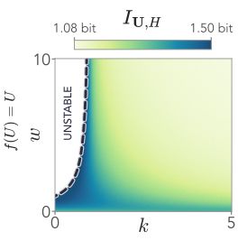
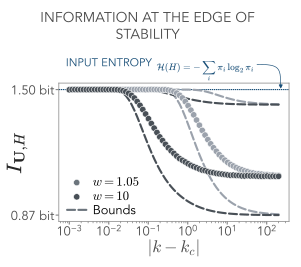
The
slow neural mode controls resolution and relaxation
\[
A=w\begin{pmatrix}1&-k\\1&-k\end{pmatrix},\qquad B=rI-A,\qquad
r,w>0
\]
Linear activation: eigenvalues of \(B\) give decay rates in units of \(\tau^{-1}\)
\[
\lambda_1=r,\quad\lambda_2=r+w(k-1)=w(k-k_c),\qquad k_c=1-\frac rw,\quad
k>k_c
\]
\[
\mathbf m_i=B^{-1}h_i\mathbf e_E,\qquad B\Sigma+\Sigma B^T=2DI
\]
Mean separation relative to noise controls distinguishability
\[
\eta=\tfrac12\Delta\mathbf m^T\Sigma^{-1}\Delta\mathbf m,\qquad
k\downarrow k_c:\quad\eta\to\infty,\quad I(\mathbf U;H)\to\mathcal{H}(H)
\]
\[
\tau_U=\frac{\tau}{\min\{r,w(k-k_c)\}}\longrightarrow\infty,\qquad\tau_H\gg\tau_U
\]
Take the slow-input limit first; at \(k=k_c\) the stationary density is lost
Accessible interior edge: \(w>r\) , \(k\ge0\) ; nonzero input spacing, isotropic
\(D>0\)
Barzon, Busiello & Nicoletti, Phys. Rev. Lett. 134, 068403
(2025); Murphy & Miller, Neuron 61, 635 (2009)
The full interactive experiment remains available through
Explore.
Optional route and return: Open from slide 50 for the E/I result, or
after slide 65 for the origin of mixture separation. Return to slide 50
after comparing persistence with the actual slowest relaxation time. The
diverging mode connects to the mixing caveat of slide 63. Keep the
slow-input limit before the approach to the stable edge; no fixed finite
switching time is claimed to reach the asymptotic ceiling arbitrarily
close to instability. During discussion, return to synthesis slide 51
after answering the question; do not automatically advance through the
appendix.
Optional appendix. A has eigenvalues 0 and w(1-k), so the linear
drift -B/τ decays when r>0 and r+w(k-1)>0. The critical value lies
inside the positive-inhibition range only for w>r. The stationary
mean solves Bm_i=h_i e_E and the covariance solves the continuous
Lyapunov equation BΣ+ΣBᵀ=2DI. Both response and noise increase near the
edge, so an assertion about amplification alone would not establish
improved information; the positive Mahalanobis separation η measures
their balance. In the specified slow-input linear model η diverges on
approach from the stable side, and the Gaussian mixture bounds squeeze
the MI to the finite discrete input entropy. The actual longest
relaxation time diverges as τ/[w(k-k_c)]. A fixed large τ_input/τ is
therefore insufficient arbitrarily close to the edge. The
prolonged-stimulus calculation later in the PRL instead uses a
continuous random stimulus and time-dependent covariance; its short-time
sensitivity optimum differs from this long-time discrete switching
result and is not substituted here. Murphy–Miller supplies the
balanced-amplification dynamical context, not the PRL’s specific
information theorem. Sources:
https://doi.org/10.1103/PhysRevLett.134.068403 and
https://doi.org/10.1016/j.neuron.2009.02.005.
Optional appendix experiment: approach the stable edge while
monitoring the actual slowest relaxation time. A large ratio to bare τ
can cease to be slow near the edge; the adiabatic bounds do not
represent a finite-switching crossover.
Timescales shape how living systems sense and
respond
\[
\tau_R\ll T\ll\tau_H
\]
Receptor memory shapes the
\[
\tau_U\;\text{vs}\;\tau_H
\]
Response memory balances
Timescale ordering selects which dependencies survive
Slow storage changes the response to later stimuli
Interactions set the time needed to distinguish inputs
What does transduction of a hidden signal cost?
\[
\xrightarrow{\;a\;}
\]
Information about the hidden signal
Information accessible to the probe
Tuning the coupling changes both the information acquired
Can transduction adapt using only observed
fluctuations?
Estimate information and changes in dissipation from observed
records
Observation time controls the accuracy of this adjustment
gnicolet@ictp.it
Nicoletti &
Busiello, Phys. Rev. Lett. 133 , 158401 (2024); Nicoletti,
Di Terlizzi & Busiello, Phys. Rev. Lett. 137 , 127101
(2026)
The first two reveals summarize the lecture. Receptor memory limits
independent measurements; response memory balances averaging and
tracking. Timescale ordering determines surviving dependencies, slow
storage supports habituation, and neural interactions determine the
actual relaxation time. The H–R–U chain is a common organizing picture;
the models have their own couplings and timescale orderings.
The third reveal opens the outlook through Nicoletti and Busiello,
“Tuning Transduction from Hidden Observables to Optimize Information
Harvesting,” Physical Review Letters 133, 158401 (2024),
https://doi.org/10.1103/PhysRevLett.133.158401. Here H, R, U correspond
to the paper’s hidden activity eta, membrane x, and probe y. The probe
tunes coupling a using accessible information and a partial dissipation
estimate. Its selected coupling can differ from the full-observation
optimum. In some regimes it acquires more hidden-signal information
while dissipating more; this remains suboptimal for the full-information
objective. Timescales determine whether the hidden activity survives
into the observed variables.
The fourth reveal follows Nicoletti, Di Terlizzi and Busiello,
“Balancing Information and Dissipation with Partially Observed
Fluctuating Signals,” Physical Review Letters 137, 127101 (2026),
https://doi.org/10.1103/8gx2-rbns. A hidden network drives a signaling
molecule and a readout. An abstract optimization agent adjusts readout
production from observed records. Empirical distributions estimate
accessible mutual information; short-time correlations estimate the
coupling-dependent dissipative contribution through traffic. The inflow
rate is coupling-independent in the model. With inhibition, both
accessible components are required. Increasing accessible information
need not generally increase hidden-signal information. Finite
observation windows limit estimation and adaptation accuracy. The
picture comes from the supplied UTokyo presentation; the final paper
distinguishes the proposed optimization agent from a realized autonomous
biochemical sensor.
Final reveal: thank the audience.
\[
\tau_U\ll\tau_R\ll\tau_H, \, \tau_S
\]
Timescale ordering selects
Information about the hidden signal \(I(H;U)\)
Information accessible to the probe \(I(R;U)\) vs \(I(H;U)\)
Transducing information via non-reciprocal interactions requires
energytrade-offs, optimal strategies, and real-time
balancing
Estimate information and changes in dissipation from observed
records